El verano había terminado.
Y con él, la época en que las siete podían reunirse en el Bosque Mágico sin que nadie preguntara nada. Ahora había colegio. Ahora había horarios. Ahora había papás que querían saber dónde estaban sus hijas todo el tiempo.
El problema era que salvar el mundo Pokémon no entraba muy bien en ningún horario.
Fue Mimi la que tuvo la idea.
— ¿Y si les decimos que somos amigas del colegio? — dijo una tarde, sentada en el claro del Árbol de la Memoria con las demás — ¿Y si encontramos un lugar al que podamos ir todas juntas sin que nadie sospeche?
— ¿Un lugar como cuál? — preguntó Juana masticando una hoja de hierba.
Fue Cata la seria quien encontró la respuesta tres días después, con los ojos clavados en una pantalla.
— La Fairy Hero Academy — dijo despacio — . Internado. Acepta alumnas de todo el mundo. Los papás piensan que es una academia normal de estudio y deporte.
— ¿Y no lo es? — preguntó Lara.
— El nombre tiene "Hero" en el medio — dijo Cata la seria — . Nada que tenga "Hero" en el nombre es completamente normal.
Convencer a los papás llevó exactamente dos semanas, cuatro presentaciones en PowerPoint hechas por Cata la de los anteojos, tres llamadas telefónicas de Super Psy haciéndose pasar por la secretaria de la academia, y una carta oficial que Superstar imprimió con un membrete dorado que ella misma diseñó.
Funcionó.
El primer día de septiembre, siete nenas llegaron a la Fairy Hero Academy con sus mochilas, sus Pokémon escondidos adentro y sus papás convencidos de que las estaban mandando al mejor internado educativo del hemisferio sur.
Mimi abrazó a su mamá en la puerta. Y cuando se giró para entrar, por un segundo pensó en Vicky. Su hermana menor. Que estaba en casa. Que no sabía nada de poderes ni de bosques mágicos ni de equipos de superheroínas.
O al menos eso creía Mimi.
La academia parecía completamente normal desde afuera. Un edificio grande de piedra gris con ventanas altas y un jardín prolijo. Nada raro. Nada misterioso.
Nada que explicara por qué, cuando Mimi cruzó la puerta principal, sus poderes se despertaron de golpe como si alguien hubiera apretado un interruptor.
— ¿Sintieron eso? — susurró agarrando el brazo de Sofi.
— Sí — dijo Sofi muy tranquila — . Como electricidad.
— Como cuando el Árbol nos dio los poderes — dijo Lara con los ojos brillantes.
Las siete se miraron. Y sin decir nada más, entraron.
El salón principal era enorme y lleno de luz. Había otras alumnas llegando de todos lados, con valijas y uniformes nuevos y Pokémon que asomaban curiosos por las mochilas. Todo parecía perfectamente normal.
Hasta que apareció la Directora.
Era una mujer de mediana edad con el pelo oscuro recogido en un rodete prolijo y unos ojos que miraban demasiado fijo, como si pudiera ver cosas que los demás no veían. Caminó hasta el frente del salón sin hacer ruido y esperó a que todas se callaran solas. Tardó exactamente cuatro segundos.
— Bienvenidas a la Fairy Hero Academy — dijo con una voz tranquila que llenó todo el salón sin esfuerzo — . Esta academia tiene una historia muy larga. Y algunas de ustedes — hizo una pausa muy breve — ya lo saben.
Mimi sintió que el estómago se le apretaba. La directora no la estaba mirando a ella específicamente. Pero tampoco la estaba dejando de mirar.
— Mi nombre es Directora Alma — continuó — . Las reglas son simples. Estudien. Entrenen. Y nunca, bajo ninguna circunstancia, usen sus habilidades especiales dentro del edificio sin permiso.
Silencio total en el salón.
— Sus habilidades deportivas, quiero decir — agregó la Directora con una sonrisa muy pequeña y muy tranquila — . Buenas tardes.
Y se fue.
— ¿Escucharon eso? — susurró Calu en cuanto la Directora desapareció por una puerta lateral.
— Lo escuchamos — dijo Cata la seria.
— Habilidades especiales — repitió Superstar ajustando sus anteojos — . No dijo deportivas primero. Lo corrigió después.
— Sabe — dijo Mimi en voz muy baja — . La Directora sabe quiénes somos.
— Bueno — dijo Juana — . Bienvenidas a la academia más rara en la que estuvimos. Y eso que estuvimos dentro de una dimensión de sombras.
Nadie pudo contradecirla.
Lo que ninguna de las siete sabía era que, en ese mismo momento, una nena las estaba observando desde el otro lado del salón.
Tenía el pelo largo y negro, los ojos entrecerrados y una expresión que no era exactamente odio pero se le parecía bastante. A su lado, escondido en su mochila, un Pokémon oscuro con una luna en la frente miraba en la misma dirección.
Mati las había reconocido en cuanto entraron. Conocía sus caras. Conocía sus nombres. Había pasado meses investigándolas después de que el Árbol de la Memoria la rechazó a ella. Después de que esa luz dorada la envolvió, le mostró todo lo que podría haber sido, y luego se apagó.
No sos la elegida, le había dicho el árbol sin palabras.
Mati todavía sentía ese frío en el pecho cuando lo recordaba.
— Ahí están — murmuró muy bajito.
El Absol en su mochila gruñó suave.
— Tranquilo — dijo Mati sin dejar de mirarlas — . Todavía no. Primero quiero ver exactamente qué pueden hacer. — Sus ojos se detuvieron en Mimi un segundo más que en las demás. — Y después les voy a demostrar que el Árbol se equivocó.
La primera noche en la Fairy Hero Academy, nadie durmió bien.
No era por las camas, que eran cómodas. No era por el ruido, porque la academia de noche estaba en silencio total. Era por esa sensación que ninguna podía sacarse de encima desde que habían cruzado la puerta principal. Como si las paredes supieran quiénes eran. Como si el edificio entero estuviera prestando atención.
Mimi se quedó mirando el techo durante horas con Leafeon acurrucado a su lado.
La Directora sabe, seguía pensando. ¿Pero cuánto sabe? ¿Y por qué no dijo nada más?
A la mañana siguiente, antes del desayuno, apareció un sobre debajo de la puerta de la habitación que compartían las siete.
Cata la seria lo levantó. Lo abrió. Leyó.
— Es de la Directora Alma — dijo — . Quiere vernos. Ahora.
— ¿A todas? — preguntó Calu todavía con el pelo revuelto.
— A todas — confirmó Cata.
Juana miró su Charmander que dormía feliz en su almohada.
— Bien — dijo — . Primer día y ya nos llaman a la dirección. Récord personal.
La oficina de la Directora Alma estaba en el último piso, al final de un pasillo largo con ventanas que daban al jardín. La puerta era de madera oscura con una hoja tallada en el centro.
Mimi la tocó sin querer al entrar. Y sintió exactamente lo mismo que cuando tocaba el Árbol de la Memoria.
Adentro, la Directora las estaba esperando de pie frente a una ventana enorme. No se giró cuando entraron. Esperó a que la puerta se cerrara sola.
— Siéntense — dijo.
Se sentaron.
La Directora se giró. Las miró a las siete una por una, despacio, como tomando nota de cada cara.
— Bien — dijo finalmente — . Ahora que estamos solas les voy a decir la verdad. Las tres verdades, en realidad.
Superstar ajustó sus anteojos. Cata la seria ya estaba memorizando todo.
— La primera — dijo la Directora — . Esta academia no es normal. Fue construida hace cien años específicamente para proteger a jóvenes con poderes especiales. Cada piedra de este edificio tiene magia del Árbol de la Memoria adentro.
Silencio.
— La segunda — continuó sin pausar — . Yo sé quiénes son. Sé lo que pueden hacer. Y sé lo que enfrentaron en el Bosque Mágico el año pasado. El Árbol me lo contó.
— ¿El Árbol... habla con usted? — preguntó Mimi.
— Me habló una sola vez. La noche que ustedes sellaron la dimensión de las sombras. — La Directora las miró con algo que no era exactamente orgullo pero se le parecía. — Me dijo que iban a venir. Y que iban a necesitar un lugar seguro para entrenar.
— ¿Y la tercera verdad? — preguntó Super Psy en voz baja.
La Directora tardó un segundo más en responder esta vez.
— La tercera — dijo — . No están solas en esta academia. Hay alguien más entre las alumnas que también fue tocada por el Árbol de la Memoria. Pero no de la misma manera que ustedes.
Mimi sintió un frío que no tenía nada que ver con el tipo Hielo de Sofi.
— ¿Quién? — preguntó.
— Eso — dijo la Directora — todavía no se los puedo decir. Porque todavía no lo sé con certeza. Solo sé que está acá. Y que tiene mucho dolor adentro.
Salieron de la oficina con la cabeza llena de preguntas y bajaron al comedor en silencio. Se sentaron en una mesa al fondo, lejos de las demás alumnas.
— Un salón secreto debajo de la academia — dijo Cata la seria en voz muy baja — . La historia del Árbol y la academia. Quién es la Directora realmente. Por qué fue construida para nosotras. Todo.
— Todo en cinco minutos — dijo Juana — . Eficiente.
— Lo que me preocupa — dijo Superstar — es lo de la otra alumna. La que fue tocada por el Árbol pero diferente.
— Diferente cómo — dijo Lara.
— Con mucho dolor adentro — repitió Mimi despacio — . Eso dijo.
Las siete se miraron. Y cada una pensó lo mismo sin decirlo.
¿Quién entre todas las alumnas de esta academia?
La respuesta llegó más rápido de lo que esperaban. Y de la peor manera posible.
Esa tarde, durante el primer entrenamiento en el gimnasio secreto que la Directora les había mostrado debajo de la academia — un salón enorme con paredes que brillaban igual que el Árbol de la Memoria — algo salió mal.
Mimi intentó usar su poder de hacer crecer plantas. Las enredaderas crecieron pero en vez de ir hacia arriba fueron hacia abajo, enroscándose alrededor de sus propios pies.
Super Psy intentó leer la mente de Leafeon. En vez de los pensamientos de Leafeon escuchó una voz extraña y distorsionada que no reconoció.
Super Ice intentó congelar un charco de práctica. El hielo creció pero en la dirección equivocada, hacia ella en vez de hacia afuera.
— Algo está mal — dijo Super Psy apretando la cabeza — . Alguien está interfiriendo con nuestros poderes.
— ¿Cómo? — preguntó Super Fire.
— No sé. Pero es intencional. Lo siento.
Superstar ajustó sus anteojos y miró alrededor del salón. Las paredes brillaban normal. El techo brillaba normal. Pero en el rincón más alejado, casi invisible contra la pared oscura, había algo.
Una grieta pequeña en la piedra. Y adentro de la grieta, un cristal negro que parpadeaba muy suave.
— Ahí — dijo Superstar señalando.
Super Aqua saltó hasta el rincón en un segundo. Sacó el cristal con cuidado. Era pequeño, del tamaño de una moneda, perfectamente liso, con algo grabado adentro que parecía una luna.
Una luna.
Mimi miró el cristal. Miró a sus amigas. Y supo.
— No fue un accidente — dijo — . Alguien puso esto acá antes de que llegáramos. Alguien que sabía exactamente dónde íbamos a entrenar.
— Alguien que conoce este lugar — dijo Cata la seria — . Alguien que estuvo acá antes que nosotras.
Silencio en el salón.
— La persona con mucho dolor adentro — dijo Lara muy bajito.
Nadie lo contradijo.
Esa noche, tres pisos más arriba, Mati miraba sus manos con una sonrisa pequeña y fría.
El cristal había funcionado exactamente como esperaba. No era suficiente para detenerlas, lo sabía. Pero era suficiente para mandarles un mensaje.
Las estoy viendo. Sé dónde están. Y sé lo que pueden hacer.
El Absol a su lado puso la cabeza en su rodilla.
— Tranquilo — dijo Mati en voz muy baja — . Esto recién empieza.
A la mañana siguiente del entrenamiento, el cristal negro estaba sobre la mesa de la habitación, dentro de un vaso de vidrio. Nadie quería tocarlo con las manos.
Super Psy lo miraba fijo desde hacía diez minutos.
— Tiene magia oscura adentro — dijo finalmente — . No es del Árbol de la Memoria. Es lo contrario. Como si alguien hubiera tomado la energía del Árbol y la hubiera dado vuelta.
— ¿Dado vuelta cómo? — preguntó Lara.
— El Árbol conecta. Esto separa — dijo Super Psy — . Hace que los poderes vayan en la dirección equivocada. Y si hubiera más de uno de estos cristales...
— Los poderes de todo el equipo estarían invertidos — terminó Superstar ajustando sus anteojos.
Silencio.
— Tenemos que encontrar quién lo puso — dijo Mimi — . Y si hay más.
Se dividieron en grupos. Mimi y Super Aqua revisaron el salón de entrenamiento. Super Fire y Super Fairy revisaron los pasillos del sótano. Superstar y Super Psy fueron a buscar información en la biblioteca de la academia. Y Super Ice, sola y en silencio como siempre, subió al último piso a revisar las aulas.
No encontraron más cristales.
Pero encontraron algo peor.
Era la hora del almuerzo cuando empezó.
Primero fue un comentario de una alumna de tercer año a otra sobre quién había ganado el entrenamiento de esa mañana. Nada grave. Un intercambio de palabras un poco más fuerte de lo necesario.
Pero dos minutos después las dos estaban gritándose. Y cinco minutos después la mitad del comedor estaba discutiendo con la otra mitad sin saber muy bien por qué.
Mimi miraba la escena desde su mesa sin entender qué estaba pasando.
— Esto no es normal — dijo.
— No — confirmó Super Psy apretando los ojos — . Hay algo en el aire. Como una vibración. No la puedo agarrar bien pero está en todas partes.
— ¿Otro cristal? — preguntó Super Fire.
— No. Esto es diferente. Es más sutil. Como si... — Super Psy abrió los ojos de golpe — . Como si estuviera en la comida.
Las ocho miraron sus platos al mismo tiempo.
— Yo no comí nada todavía — dijo Calu.
— Yo sí — dijo Juana — . Y estoy bien.
— Yo también — dijo Lara — . Aunque... — frunció el ceño — . Me siento un poco rara. Como con ganas de discutir.
— No discutiste con nadie — observó Sofi.
— Porque me di cuenta — dijo Lara — . Pero las ganas estaban.
Super Psy cerró los ojos otra vez y extendió su poder por todo el comedor. Buscó la vibración. La siguió. Y la encontró.
No estaba en la comida. Estaba debajo de la mesa larga del centro del comedor, pegado con algo oscuro a la madera. Un cristal nuevo. Más grande que el del sótano. Con la misma luna grabada.
— Ahí — dijo Super Psy señalando sin abrir los ojos.
Super Aqua se deslizó por debajo de la mesa sin que nadie la viera. Lo despegó. Y en el momento en que el cristal se separó de la madera, el ruido del comedor bajó diez decibeles de golpe. Las alumnas que estaban gritándose se miraron confundidas, como si no recordaran muy bien por qué habían empezado.
Esa tarde, con los dos cristales dentro del vaso de vidrio, el equipo se reunió en su habitación.
— Alguien que conoce la academia — dijo Mimi — . Alguien que sabe dónde está el salón secreto. Alguien que pudo entrar al comedor antes que todas nosotras esta mañana.
— Una alumna — dijo Cata la seria — . Tiene que ser una alumna. O alguien que vive acá.
— O las dos cosas — dijo Superstar.
— ¿Le decimos a la Directora? — preguntó Lara.
— Todavía no — dijo Mimi — . Primero quiero entender quién es. Y por qué.
Super Psy miró los cristales en silencio.
— La energía de estos cristales es muy específica — dijo despacio — . Quien los hizo no aprendió esto en ningún libro. Lo siente. Lo lleva adentro. — Hizo una pausa — . Esta persona tiene poderes reales. No como los nuestros, pero reales.
— ¿Cuántas personas con poderes reales conocemos? — preguntó Juana.
Todas se miraron.
— Nosotras — dijo Calu.
— Y la persona con mucho dolor adentro — dijo Lara muy bajito.
El cuarto quedó en silencio.
Afuera, en el pasillo, unos pasos se alejaron despacio. Nadie los escuchó.
Mati llegó a su habitación, cerró la puerta con cuidado y se sentó en el suelo con la espalda contra la cama. El Absol vino y se recostó a su lado.
Sabían que los cristales habían sido encontrados. Lo había calculado. Era demasiado pronto para que no los encontraran.
Pero el segundo cristal había funcionado. Las había visto desde el pasillo, saliendo del comedor con las caras tensas y confundidas. Había visto cómo Lara se pellizcaba el brazo para no decir algo que quería decir. Había visto cómo Super Psy apretaba los dientes.
Incluso el Equipo Leaf podía tambalearse.
Solo necesitaba más tiempo. Y más cristales.
— Todavía no sospechan de mí — murmuró acariciando al Absol — . Para ellas soy invisible. Una alumna más.
El Absol cerró los ojos.
— Bien — dijo Mati — . Así me gusta.
Era martes por la mañana y todo parecía normal.
Las alumnas de la Fairy Hero Academy desayunaban, reían, discutían sobre cuál era el mejor Pokémon para el entrenamiento de la tarde. El sol entraba por las ventanas del comedor. Los Pokémon correteaban por el jardín.
Y entonces el cielo se puso negro.
No de a poco. No con nubes que se iban juntando despacio. De golpe. Como si alguien hubiera apagado el sol de un manotazo.
Mimi levantó la vista de su taza y sintió que algo se le apretaba en el pecho. No era miedo exactamente. Era algo más viejo. Más profundo. Como cuando el Bosque Mágico estaba en peligro y los animales se callaban todos al mismo tiempo.
— ¿Vieron eso? — dijo.
Nadie tuvo tiempo de responder.
El primer rayo cayó en el jardín y arrancó un árbol de raíz.
El segundo cayó en el techo del ala este de la academia con un estruendo que hizo temblar las ventanas.
El tercero no cayó sobre la academia. Cayó más lejos. Mucho más lejos.
Las luces de emergencia del salón secreto se encendieron solas con un zumbido grave y urgente.
La Directora Alma apareció en la puerta del comedor. Por primera vez desde que habían llegado, su expresión no era tranquila.
— Todas al sótano — dijo con una voz que no admitía discusión — . Ahora.
El caos fue inmediato.
Doscientas alumnas tratando de moverse al mismo tiempo por pasillos que de repente estaban oscuros. Pokémon asustados que chillaban y saltaban. Ventanas que se rompían con el viento. El sonido de la tormenta afuera que no era normal, que no sonaba como lluvia sino como algo vivo y furioso que golpeaba el edificio con intención.
El equipo se juntó en medio del pasillo principal.
— Esto no es una tormenta normal — dijo Super Psy apretando la cabeza con las dos manos — . Hay magia oscura adentro. Muchísima. Más de lo que vimos nunca.
— ¿Más que la hermana de Argenta? — preguntó Super Fire.
— Diferente — dijo Super Psy — . Esa magia venía de adentro de una persona. Esta... está en todas partes al mismo tiempo. Como si alguien la hubiera soltado y ya no la pudiera controlar nadie.
— ¿O como si no quisiera que nadie la controlara? — dijo Superstar ajustando sus anteojos.
Silencio.
La Directora Alma llegó hasta ellas abriéndose paso entre las alumnas asustadas.
— La tormenta no es solo acá — dijo sin preámbulos — . Está en todas partes. El Bosque Mágico. Las ciudades Pokémon. Todo el mundo está siendo atacado al mismo tiempo.
— ¿Al mismo tiempo? — dijo Calu — . ¿Cómo?
— No lo sé — admitió la Directora. Y esas tres palabras sonaron más aterradoras que cualquier cosa que hubiera dicho antes, porque la Directora Alma siempre sabía todo — . Nunca vi algo así. Ni en cien años de historia de esta academia.
— ¿Podemos pararla? — preguntó Mimi.
La Directora la miró fijo.
— No lo sé — repitió.
Bajaron al salón secreto con el resto de las alumnas. Las paredes que normalmente brillaban con luz dorada ahora parpadeaban nerviosamente, como si la magia del Árbol de la Memoria dentro de las piedras estuviera asustada.
Super Psy cerró los ojos y extendió su poder tan lejos como pudo.
— Hay algo — dijo despacio — . Una presencia. No la puedo ver bien. Es como si estuviera escondida detrás de algo. Como una ilusión.
— ¿Una ilusión? — preguntó Lara.
— Como si alguien estuviera usando magia oscura para parecer invisible — dijo Super Psy — . Para estar en algún lugar sin que nadie la vea.
— ¿Está acá? — preguntó Mimi mirando alrededor del salón lleno de alumnas asustadas.
Super Psy tardó un segundo.
— No lo sé — dijo — . Puede estar en cualquier parte. O en todas partes al mismo tiempo.
— ¿Podés identificarla? — preguntó Cata la seria.
— No — dijo Super Psy abriendo los ojos — . Está demasiado escondida. Solo sé que existe. Y que está muy cerca.
En el rincón más alejado del salón secreto, sentada en el suelo entre dos alumnas de segundo año que lloraban asustadas, Mati acariciaba al Absol escondido en su mochila con una mano completamente tranquila.
La ilusión estaba funcionando perfectamente. Para todos en ese salón ella era exactamente lo que parecía: una alumna más, asustada como las demás, esperando que pasara la tormenta. Nadie la miraba. Nadie sospechaba.
Afuera, la tormenta seguía rugiendo.
Mati sonrió muy suave, sin que nadie la viera.
Todavía no, se dijo. Todavía no es el momento.
Fue entonces que todas las luces del salón parpadearon y se apagaron.
Un segundo de oscuridad total.
Y en ese segundo, desde la entrada del salón, entró algo.
Una luz. No oscura. No dorada como el Árbol de la Memoria. Algo completamente diferente. Cambiante. Como una aurora. Como todos los colores del cielo de noche juntos en un solo lugar.
Doscientas alumnas giraron al mismo tiempo.
La Directora Alma dio un paso hacia atrás.
Y Mimi, desde el otro lado del salón, vio la figura que venía detrás de esa luz.
Una nena con el pelo oscuro cortito y los ojos más curiosos y más asustados que había visto en mucho tiempo. Con un Pokémon plateado y cambiante flotando a su lado que iluminaba todo el salón con esa luz de aurora que no era de este mundo.
La nena miró alrededor del salón lleno de gente. Miró las paredes que parpadeaban. Miró la tormenta afuera. Y finalmente encontró la cara de Mimi entre todas las demás.
— Hola — dijo con la voz un poco temblorosa — . El Árbol me mandó. Creo. No estoy muy segura de cómo llegué acá exactamente.
Mimi sintió que algo dentro de ella se rompía y se arreglaba al mismo tiempo.
— Vicky — susurró.
Su hermana menor. Que estaba en casa. Que no sabía nada de poderes ni de bosques mágicos ni de equipos de superheroínas.
O al menos eso había creído Mimi hasta ese momento.
En el rincón del salón, Mati dejó de acariciar al Absol.
Miraba a la recién llegada. A esa luz de aurora que no había visto nunca. A ese Pokémon plateado que parpadeaba suave y cambiante.
Por primera vez en toda la noche, algo dentro de su plan perfectamente calculado tembló muy levemente.
No lo mostró. Nadie la estaba mirando de todas formas.
Pero lo sintió.
¿Quién es esa?
La tormenta no paró en toda la noche.
El equipo se quedó en el salón secreto con Vicky mientras la Directora Alma coordinaba a las demás alumnas. Nadie dormía. Nadie podía. El sonido de los rayos afuera era constante y cada tanto las paredes temblaban.
Mimi no se separó de Vicky en ningún momento.
— ¿Cuándo? — le preguntó en voz muy baja mientras las demás hablaban entre ellas — . ¿Cuándo te dio los poderes el Árbol?
Vicky miró a Silvion que flotaba a su lado parpadeando suave.
— Hace tres meses — dijo — . Una noche soñé con él. Con el Árbol. Me dijo que no le dijera nada a nadie todavía. Que esperara. Que iba a saber cuándo era el momento.
— ¿Y esta noche fue el momento?
— Silvion me despertó — dijo Vicky — . Y señaló la ventana. Y el cielo estaba negro. — Hizo una pausa — . Supe que tenía que venir.
Mimi la miró un segundo largo.
— Tendría que haberlo sabido — dijo finalmente.
— No — dijo Vicky — . El Árbol no quería que lo supieras todavía. A veces los secretos tienen su momento.
Superstar, que estaba escuchando desde el lado, ajustó sus anteojos.
— Me gusta esta nena — dijo.
A la mañana siguiente, cuando la tormenta aflojó lo suficiente para que pudieran moverse, la Directora Alma reunió al equipo en su oficina.
— La magia oscura de anoche dejó una marca — dijo — . En las paredes de la academia. En el suelo del jardín. Y en el salón secreto. — Hizo una pausa — . Quien hizo esto quiere que sepamos que estuvo acá. Es un mensaje.
— ¿Qué dice el mensaje? — preguntó Cata la seria.
— Que va a volver — dijo la Directora — . Y que la próxima vez va a ser peor.
Silencio en la oficina.
— ¿Tienen alguna idea de quién es? — preguntó la Directora mirándolas una por una.
— Una firma oscura — dijo Super Psy — . Eso es todo lo que encontré anoche. No pude identificarla.
La Directora asintió despacio.
— Entonces tenemos que estar preparadas — dijo — . Porque va a volver. Y cuando vuelva va a querer que la vean.
Tenía razón.
Volvió esa tarde.
El equipo estaba entrenando en el salón secreto — esta vez con Vicky, que miraba todo con los ojos muy abiertos y Silvion pegado a su lado — cuando las paredes dejaron de brillar dorado y se pusieron negras de golpe.
Y en el centro del salón apareció una figura.
No era una persona exactamente. Era una silueta hecha de magia oscura, con el contorno de una nena pero completamente negra y sin cara visible. A su lado, la sombra de un Pokémon con algo que parecía una luna en la frente.
La figura las miró. O al menos eso pareció, aunque no tuviera ojos.
Y atacó.
Fue rápido y brutal.
Una ola de magia oscura que golpeó al equipo desde todas las direcciones al mismo tiempo. Super Ice levantó una pared de hielo que se rompió en segundos. Super Fire lanzó llamas que la oscuridad apagó sin esfuerzo. Super Psy intentó leer a la figura y retrocedió con un grito tapándose los ojos.
— ¡No puedo entrar! — gritó — . ¡Está completamente bloqueada!
Superstar copió los poderes de todas y los lanzó juntos. La figura los absorbió sin moverse.
Mimi hizo crecer enredaderas gigantes que la oscuridad cortó una por una.
Nada funcionaba.
La figura se detuvo en el centro del salón. Y habló. Su voz era distorsionada, oscura, irreconocible.
— Me llamo Mora — dijo — . Y vine a decirles algo.
Nadie respondió.
— El Árbol de la Memoria cometió un error — continuó — . Y voy a demostrarlo. No importa cuánto entrenen. No importa cuánto tiempo tengan. Lo que el Árbol les dio a ustedes me pertenecía a mí.
— ¿Quién sos? — dijo Mimi.
— Mora — repitió la figura — . Eso es todo lo que necesitan saber por ahora.
Y lanzó el ataque más grande hasta ese momento. Una ola oscura enorme que derribó a todo el equipo al mismo tiempo.
En ese momento Vicky dio un paso al frente.
No lo pensó. No lo planeó. Silvion brilló de golpe con una luz tan intensa que llenó todo el salón. Y Vicky extendió las manos y esa luz de aurora — cambiante, de todos los colores a la vez — salió disparada hacia la ola oscura.
Las dos fuerzas chocaron en el centro del salón.
Por un segundo todo quedó en blanco.
Y cuando la luz se apagó, la figura de Mora había desaparecido.
El salón volvió a brillar dorado despacio, como recuperándose de algo.
Vicky bajó los brazos. Tenía las manos temblando. Silvion vino y apoyó la cabeza en su hombro.
Todas la miraban en silencio.
— No sé cómo hice eso — dijo Vicky en voz muy baja.
— Yo sí — dijo Mimi sonriendo — . Sos tipo Aurora. La única cosa que puede cortar la oscuridad pura es la luz que cambia de color.
Vicky miró sus manos todavía temblando.
— ¿Siempre va a dar tanto miedo? — preguntó.
— Sí — dijo Juana — . Pero te acostumbrás.
En el pasillo de afuera del salón secreto, entre un grupo de alumnas que habían corrido a ver qué pasaba, Mati miraba la puerta cerrada con la misma expresión de susto que todas las demás.
Por adentro, sin embargo, sus pensamientos eran completamente diferentes.
La aurora. Esa luz que había cortado su magia como si fuera papel.
No lo había calculado. No sabía que existía algo así. Y eso era un problema.
¿Qué sos exactamente?
Pero no lo dijo en voz alta. Sonrió suave cuando una alumna a su lado la miró asustada.
— Qué miedo, ¿no? — dijo Mati con la voz perfectamente tranquila.
La alumna asintió.
Y Mati siguió sonriendo mientras por adentro reorganizaba todo su plan desde el principio.
Después del ataque de Mora, la academia quedó en un silencio raro.
No era el silencio tranquilo de antes. Era el silencio de cuando todos saben que algo malo pasó y algo peor está por venir.
Las alumnas hablaban en voz baja en los pasillos. Los profesores cancelaron las clases de la tarde. Y la Directora Alma pasó todo el día encerrada en su oficina con mapas del mundo Pokémon extendidos sobre el escritorio, buscando algún patrón en los ataques de la tormenta.
El equipo entrenó en el salón secreto hasta que les dolieron los brazos.
Vicky entrenó con ellas. Era la primera vez que practicaba sus poderes de verdad, con otras personas, en un lugar que no era su cuarto a las tres de la mañana. Silvion flotaba a su lado guiándola.
— Así — decía Mimi mostrándole — . No lo fuerces. Dejalo salir solo.
— Es que cuando lo fuerzo se va en la dirección equivocada — dijo Vicky.
— Exactamente lo mismo me pasaba a mí al principio — dijo Lara.
— Y a mí — dijo Sofi.
— Y a todas — dijo Juana — . Menos a Cata la seria que desde el primer día lo hacía perfecto y nos hacía quedar mal a todas.
Cata la seria no dijo nada pero algo en su expresión indicaba que era completamente verdad.
Lo que ninguna vio fue que desde la puerta entreabierta del salón, alguien las miraba.
Mati observó el entrenamiento durante diez minutos completos. Miraba a Vicky específicamente. La forma en que usaba sus poderes. La forma en que se cansaba. La forma en que Silvion la sostenía cuando ella aflojaba.
Y entonces lo vio.
Cada vez que Vicky usaba demasiada aurora de golpe, Silvion brillaba más fuerte para compensar. Como si le estuviera prestando energía. Como si sin Silvion cerca, la aurora de Vicky fuera mucho más débil.
Ahí está, pensó Mati.
Cerró la puerta del salón sin hacer ruido y se fue.
Esa noche en el comedor, Mati se sentó al lado de Vicky.
No era la primera vez que lo hacía. Desde que Vicky había llegado, Mati había estado cerca de ella en varias ocasiones. Siempre casual. Siempre natural. Nunca demasiado.
— ¿Cómo te fue entrenando? — le preguntó.
Vicky la miró. Mati tenía una sonrisa fácil y unos ojos que parecían genuinamente curiosos.
— Bien — dijo Vicky — . Cansador.
— ¿Silvion te ayuda mucho?
Vicky miró a su Pokémon que flotaba a su lado mordisqueando algo.
— Muchísimo — dijo — . La verdad es que sin él no sé si podría hacer nada. Es como que mis poderes y los suyos están conectados. Si él está lejos o cansado, yo también pierdo fuerza.
— Qué interesante — dijo Mati.
— Sí — dijo Vicky sin notar nada — . La Directora dice que es porque somos tipo Aurora las dos. Silvion y yo. Que nuestras energías se refuerzan mutuamente.
— ¿Y si se separan?
— No lo sé — dijo Vicky — . Nunca pasó. No me gusta ni pensarlo.
Mati asintió despacio con la misma sonrisa tranquila.
— Tiene sentido — dijo — . ¿Querés más pan?
Tres días después, Vicky desapareció.
No hubo señales. No hubo pelea. No hubo grito.
Mimi fue a buscarla a su habitación por la mañana y la cama estaba vacía. La mochila seguía ahí. Los libros seguían ahí. Todo seguía exactamente donde Vicky lo había dejado la noche anterior.
Menos Vicky.
Y menos Silvion.
Vicky abrió los ojos y no vio nada.
No era oscuridad exactamente. Era la ausencia de todo. Sin luz. Sin sonido. Sin frío ni calor. Como si el mundo hubiera desaparecido y ella fuera lo único que quedaba.
Tardó un segundo en recordar dónde había estado antes de esto. Su habitación. La cama. El sonido de la academia de noche.
Y entonces algo la había envuelto y todo se había apagado.
Se puso de pie despacio. El suelo era firme pero no se veía. Extendió la mano y sintió que algo resistía, como si el aire fuera más denso que afuera.
— Silvion — llamó.
Nada.
El silencio era tan completo que su propia voz sonó extraña, como si rebotara contra algo que no existía.
Intentó usar sus poderes. La aurora que normalmente le salía sola, cambiante y de todos los colores, apareció en sus manos pero pequeña. Tenue. Como una vela en vez de un faro.
Sin Silvion, entendió. Estoy sola.
— No tiene sentido luchar contra eso — dijo una voz.
Vicky giró. En la oscuridad apareció la figura de Mora. Sin cara. Sin contorno claro. Solo esa silueta oscura que había visto en el salón de entrenamiento.
— ¿Dónde estoy? — preguntó Vicky.
— En un lugar que hice para vos — dijo Mora — . Específicamente para vos.
— ¿Por qué?
— Porque sos la única que puede pararme — dijo Mora — . Y no puedo permitir eso todavía.
Vicky la miró fijo a pesar de que no había nada que mirar exactamente.
— ¿Todavía? — repitió — . ¿Qué significa todavía?
Mora no respondió enseguida. Y en ese silencio Vicky notó algo. La figura oscura, que siempre se movía con una seguridad perfecta, estaba quieta. Demasiado quieta. Como si estuviera pensando en algo que no había planeado decir.
— El Árbol cometió un error — dijo finalmente Mora — . Eligió mal. Y voy a demostrarlo.
— ¿Quién sos? — preguntó Vicky.
— Ya te dije. Mora.
— No — dijo Vicky — . Eso es lo que usás. ¿Quién sos de verdad?
Silencio largo.
— Alguien a quien el Árbol le dio la espalda — dijo Mora finalmente, y por primera vez su voz distorsionada sonó a algo más. A algo que dolía — . Igual que a vos te la habría dado si no hubiera necesitado tu aurora para algo.
— El Árbol no me dio la espalda — dijo Vicky.
— Todavía no — dijo Mora.
Y la oscuridad se cerró más alrededor de Vicky y la conversación terminó.
Silvion apareció en el pasillo de la academia a las seis de la mañana, cuando todavía no había nadie.
Flotaba de un lado al otro frenético, parpadeando con una luz de aurora desesperada que cambiaba de color cada segundo. Fue hasta la puerta de la habitación de Vicky. Golpeó con la cola. Nadie respondió.
Fue hasta la habitación de Mimi. Golpeó más fuerte.
Mimi abrió la puerta con los ojos entrecerrados y cuando vio a Silvion solo, sin Vicky, se le fue el sueño de golpe.
— ¿Dónde está? — preguntó.
Silvion parpadeó desesperado y señaló hacia ningún lado específico. Hacia todos lados. Como diciendo no sé, no sé, no sé.
Mimi agarró a Silvion con cuidado. El Pokémon temblaba levemente. Su luz de aurora era más débil que de costumbre, como si ya estuviera sintiendo la separación de Vicky.
— Vamos — le dijo — . Vamos a encontrarla.
El equipo buscó por toda la academia durante horas.
Cada salón. Cada pasillo. Cada rincón del jardín. Cada escalera y cada puerta que normalmente estaba cerrada. La Directora Alma activó todos los sistemas de seguridad del edificio y revisó cada registro de movimiento de la noche anterior.
Nada.
Silvion iba con ellas, flotando al lado de Mimi, guiándolas con su luz hacia donde sentía algo. Pero cada vez que llegaban al lugar que señalaba, no había nada. Solo paredes. Solo aire.
— Está — dijo Super Psy con la voz tensa — . La siento. Pero está muy lejos. Y hay algo oscuro alrededor de ella. Como una pared. Como si estuviera adentro de algo cerrado. Como la dimensión oscura del Bosque Mágico pero construida diferente. Más nueva. Hecha específicamente para ella.
— Mora — dijo Superstar ajustando sus anteojos.
— Mora — confirmó Super Psy.
Mimi apretó los puños.
— ¿Por qué Vicky? — dijo Juana — . ¿Por qué no fue por alguna de nosotras?
— Porque Vicky es la única que puede pararla — dijo Mimi — . Sin la aurora, Mora sabe que puede ganar.
— ¿Y Silvion? — preguntó Lara mirando al Pokémon que flotaba al lado de Mimi cada vez más opaco.
— Silvion está acá — dijo Mimi — . Y si Silvion y Vicky están separados...
— Los poderes de Vicky van a ir debilitándose — terminó Cata la seria — . Tenemos que encontrarla antes de que eso pase.
Silvion parpadeó muy suave, como confirmando. Y Mimi lo abrazó un momento.
— La vamos a encontrar — le dijo — . Te lo prometo.
Fue Super Psy quien notó algo raro.
Mientras el equipo se reunía en el pasillo principal para organizarse, miró alrededor de las alumnas que habían salido a ver qué pasaba con todo el movimiento de la mañana.
Y vio a Mati.
Estaba entre el grupo de alumnas curiosas, con la misma expresión de preocupación que todas las demás. Pero algo era diferente. Super Psy no supo exactamente qué. Solo que la expresión de Mati era un poco demasiado tranquila para alguien que acababa de enterarse de que una compañera había desaparecido.
— Oye — le dijo a Superstar en voz muy baja.
— ¿Qué?
— Mirá a esa nena. La del pelo largo.
Superstar la miró por un segundo discretamente.
— ¿Qué tiene?
— No sé — dijo Super Psy — . Algo. No puedo decir qué todavía.
Superstar ajustó sus anteojos y volvió a mirar a Mati que en ese momento se agachó a ayudar a una alumna más chica que había tropezado.
— Parece normal — dijo Superstar.
— Sí — dijo Super Psy — . Parece.
Y lo dejaron ahí. Había cosas más urgentes. Pero Super Psy no se olvidó.
Esa noche, con Silvion dormido exhausto en la cama de Vicky, Mimi se sentó sola en el pasillo oscuro con la espalda contra la pared.
Pensaba en su hermana. En lo que Vicky le había dicho aquella primera noche.
A veces los secretos tienen su momento.
— El tuyo llegó demasiado rápido — susurró Mimi en la oscuridad — . Pero te vamos a encontrar. Te lo juro.
En algún lugar que no era este mundo, en una oscuridad sin luz ni sonido, Vicky seguía de pie. Sola. Con la aurora en las manos cada vez más pequeña.
Pero de pie.
Super Psy no podía dejar de pensar en Mati.
Era así desde la mañana en que Vicky había desaparecido. Ese momento en el pasillo. Esa expresión demasiado tranquila. Ese algo que no podía nombrar pero que se había quedado pegado en algún lugar de su cabeza como una canción que no para.
Las demás estaban enfocadas en encontrar la entrada a la dimensión oscura. Buscaban con Silvion, revisaban los mapas de la Directora, entrenaban para estar listas cuando encontraran a Mora.
Super Psy hacía todo eso también.
Pero mientras lo hacía, una parte de su cabeza seguía tirando del hilo.
Mati.
Empezó de a poco. Sin que nadie lo notara.
El primer día observó a Mati en el comedor. Cómo comía. Con quién hablaba. A dónde miraba. Mati era social pero no demasiado. Simpática pero no efusiva. Siempre en el lugar correcto, siempre con la expresión correcta. Como alguien que había practicado mucho cómo parecer normal.
El segundo día Super Psy se sentó cerca de ella en la biblioteca. No habló. Solo estuvo cerca y dejó su poder abierto muy suave, como una antena, sin intentar entrar en nada. Solo escuchando el ambiente.
Y sintió algo.
Muy tenue. Muy escondido. Como el eco de algo que había estado ahí y ya no estaba. Como cuando entrás a un cuarto donde alguien acaba de apagar una vela y todavía queda el olor del humo.
La firma oscura de Mora.
Rapidísimo, Super Psy cerró su poder. Miró a Mati que estaba leyendo tranquila sin levantar la vista.
Ahí está, pensó. La misma firma. La misma energía.
El tercer día fue a ver los cristales.
Los dos cristales que habían encontrado al principio seguían en el vaso de vidrio en la habitación del equipo. Super Psy los sacó uno por uno y los sostuvo con cuidado, extendiendo su poder muy despacio.
La firma oscura estaba en los cristales también. Por supuesto. Mora los había hecho.
Pero ahora que sabía qué buscar, podía sentirla con más claridad. Y era exactamente igual a lo que había sentido en la biblioteca al lado de Mati.
No parecida. Igual.
Super Psy dejó los cristales en el vaso y se quedó mirando la pared durante un momento largo.
Son la misma persona.
Esa noche se quedó despierta cuando las demás se durmieron.
Esperó hasta la una de la mañana. Y entonces salió al pasillo en silencio.
Fue hasta el ala donde estaba la habitación de Mati. Se quedó afuera, en el pasillo oscuro, y extendió su poder hacia adentro. No para leer pensamientos. Solo para sentir la energía.
Y entonces Mati abrió los ojos en la oscuridad de su habitación.
Había sentido algo. Una presencia. Suave, cuidadosa, casi invisible. Pero ahí.
Se quedó completamente quieta. El Absol a su lado también se había despertado y miraba hacia la puerta sin moverse.
Alguien me está mirando, pensó Mati. Alguien con poderes.
Extendió su propia magia oscura muy despacio, como un tentáculo invisible por debajo de la puerta.
Y la encontró.
Super Psy sintió la magia oscura tocarla y se alejó de golpe del pensamiento, cerrando todo. Pero era tarde.
Las dos se habían sentido mutuamente.
Al día siguiente en el desayuno, Super Psy y Mati se miraron por primera vez de verdad.
No fue un momento largo. Solo un segundo. Una mirada cruzada sobre las bandejas del comedor.
Pero en ese segundo las dos supieron exactamente lo mismo.
Sé quién sos.
Mati sonrió muy suave y bajó la vista a su desayuno.
Super Psy no sonrió. Tomó su taza de té y se giró hacia Superstar.
— Necesito contarte algo — dijo en voz muy baja — . Pero no acá.
Esa tarde Super Psy le contó todo al equipo en el salón secreto. La firma oscura. Los cristales. La noche en el pasillo.
Silencio cuando terminó.
— ¿Estás segura? — preguntó Mimi.
— Completamente — dijo Super Psy — . Mati es Mora.
— ¿Y ella sabe que vos sabés? — preguntó Superstar.
— Sí — dijo Super Psy — . Y yo sé que ella sabe que yo sé.
— ¿Y ahora qué? — preguntó Juana.
Mimi miró al suelo un momento. Pensó en Vicky en esa dimensión oscura. En Silvion cada vez más apagado. En el tiempo que se acababa.
— Ahora sabemos quién es — dijo — . Y eso cambia todo.
En su habitación, Mati miraba el techo con el Absol acurrucado a sus pies.
El plan había cambiado. Ya no era invisible. Ya no era una alumna más. La del Psyduck sabía. Y si ella sabía, en unas horas todas iban a saber.
Tenía que moverse más rápido.
Cerró los ojos y conectó con la dimensión oscura. Sintió a Vicky adentro. La aurora de la nena era más débil que antes. Mucho más débil.
Bien.
Pero no era suficiente tiempo todavía. Necesitaba un poco más.
— Absol — dijo en voz baja.
El Pokémon levantó la cabeza.
— Mañana — dijo Mati — . Todo cambia mañana.
Mati se despertó antes del amanecer.
No había dormido bien. Desde la noche anterior, desde esa mirada cruzada con Super Psy en el comedor, algo había cambiado. El plan perfecto que había construido durante meses tenía una grieta. Y las grietas, si no se atendían a tiempo, se convertían en fracturas.
Miró al Absol dormido a sus pies.
— Nos vamos hoy — dijo en voz muy baja.
El Absol abrió los ojos. No se sorprendió.
A tres pisos de distancia, en el salón secreto, el equipo tampoco había dormido bien.
Silvion estaba en el centro del salón, quieto. Su luz de aurora, que siempre había sido cambiante y viva, ahora era apenas un parpadeo tenue. Como la última chispa de una vela que está por apagarse.
Mimi lo miraba con el corazón apretado.
— ¿Cuánto tiempo le queda? — preguntó en voz baja.
— No mucho — dijo Super Psy — . Unas horas. Quizás menos.
— ¿Y Vicky?
Super Psy cerró los ojos.
— La siento — dijo — . Pero muy débil. La aurora casi no está. Si Silvion se apaga completamente...
No terminó la frase. No hacía falta.
A las siete de la mañana el comedor estaba lleno como siempre.
Mati se sentó en su lugar de siempre, con su bandeja de siempre, con la misma expresión de siempre. Nadie la miraba diferente. Nadie sabía nada todavía, excepto el equipo.
Comió despacio. Tranquila. Como si tuviera todo el tiempo del mundo.
Por adentro estaba calculando cada segundo.
La mochila ya estaba lista en su habitación. Solo lo esencial. El Absol cabía cómodo adentro cuando quería. Los cristales que le quedaban estaban guardados en un bolsillo interno.
Cuando terminó de desayunar, dejó la bandeja, saludó con la cabeza a una alumna que la miró al pasar, y caminó hacia el pasillo.
Nadie la siguió.
Super Psy la vio salir del comedor.
— Ahí va — dijo en voz baja.
— ¿La seguimos? — preguntó Calu.
— Todavía no — dijo Mimi — . Si la enfrentamos ahora, Mora va a reaccionar. Y Vicky está adentro.
— Entonces esperamos — dijo Superstar.
— Esperamos — confirmó Mimi.
Pero mientras decía eso, Silvion parpadeó. Una vez. Dos veces. Y su luz se hizo todavía más pequeña.
Mati caminó por el pasillo del ala norte sin apurarse. Saludó a un profesor que venía en dirección contraria. Esperó a que doblara la esquina. Y entonces, en el momento exacto en que el pasillo quedó vacío, se metió por una puerta lateral que daba a las escaleras de servicio.
Nadie la vio.
Ni las cámaras de la academia, que misteriosamente tenían un punto ciego exactamente ahí.
Ni la Directora Alma, que en ese momento estaba revisando los registros de energía oscura del salón secreto y no miraba los monitores.
Ni ninguna alumna.
Ni nadie.
Bajó las escaleras de servicio hasta el sótano. Cruzó el pasillo de mantenimiento. Subió por la escalera trasera que daba al jardín. Y salió por la puerta del fondo, la que daba al bosque que rodeaba la academia.
Caminó hacia los árboles sin mirar atrás.
Y desapareció.
En el mismo momento en que Mati cruzó la línea del bosque y se alejó de la academia, algo cambió.
Silvion lo sintió primero.
El Pokémon, que había estado quieto y casi apagado, de repente levantó la cabeza. Su luz parpadeó. No más fuerte. Al contrario. Como si algo que lo estuviera sosteniendo hubiera desaparecido de golpe.
Y entonces se apagó completamente.
— ¡Silvion! — gritó Mimi agarrándolo.
El Pokémon estaba consciente, respiraba, pero su luz era cero. Nada. Como si la aurora hubiera desaparecido del todo.
Y entonces Super Psy abrió los ojos de golpe.
— La dimensión — dijo — . La siento. Está... cayendo.
— ¿Qué significa eso? — preguntó Lara.
— Significa que quien la sostenía se fue — dijo Super Psy — . Mora se fue. Y sin Mora la dimensión no puede mantenerse.
— ¿Y Vicky? — preguntó Mimi.
— Si la dimensión cae, Vicky queda libre — dijo Super Psy — . Pero sin la dimensión que la contenía, va a aparecer en algún lugar de la academia. Y sin poderes.
— ¿Sin poderes? — repitió Mimi.
— Cuando la dimensión cae, absorbe todo lo que había adentro — dijo Super Psy — . Incluyendo lo que le quedaba de aurora a Vicky.
Silencio.
— ¿Dónde va a aparecer? — preguntó Calu.
Super Psy cerró los ojos. Buscó. Siguió el rastro de lo que quedaba de la dimensión mientras se desmoronaba.
— El salón secreto — dijo — . La dimensión estaba anclada ahí. Es donde va a caer.
— Vamos — dijo Mimi.
Llegaron al salón secreto en treinta segundos.
La puerta estaba cerrada pero las paredes de adentro parpadeaban con una luz oscura errática, como un televisor a punto de apagarse. Super Ice la abrió de un golpe de hielo en la cerradura.
Adentro, en el centro del salón, el aire temblaba.
Y entonces, con un sonido que no era exactamente un sonido sino más bien la ausencia de todo sonido por un segundo, la dimensión colapsó.
Una onda de energía oscura sacudió el salón. Las paredes doradas parpadearon fuerte y se apagaron un momento.
Y en el suelo, donde antes no había nada, apareció Vicky.
Estaba de rodillas, con las manos apoyadas en el suelo, respirando fuerte. Tenía el pelo revuelto y los ojos abiertos muy grandes mirando el suelo sin ver nada todavía.
Mimi cruzó el salón corriendo y se tiró al suelo a su lado.
— Vicky — dijo agarrándola de los hombros — . Vicky, estoy acá.
Vicky levantó la vista despacio. Tardó un segundo en enfocar.
— Mimi — dijo con la voz ronca — . Estaba tan oscuro.
— Ya sé — dijo Mimi — . Ya pasó. Estás acá.
Silvion apareció flotando al lado de Vicky y apoyó la cabeza en su hombro. Pero su luz seguía apagada. Y Vicky miró sus propias manos y las extendió, esperando sentir la aurora.
Nada.
— No tengo poderes — dijo en voz muy baja.
— Los va a recuperar — dijo la Directora Alma desde la puerta — . La dimensión los absorbió pero no los destruyó. Van a volver. Solo necesita tiempo.
Vicky miró a la Directora. Miró a Mimi. Miró al equipo entero alrededor de ella.
Y por primera vez desde que había desaparecido, exhaló larga y despacio.
— ¿Y Mora? — preguntó.
Mimi y Super Psy se miraron.
— Se fue — dijo Mimi — . Y todavía no sabemos a dónde.
Vicky asintió despacio. Y en sus ojos había algo que el equipo no esperaba ver.
No miedo. No alivio.
Algo que se parecía mucho a entender.
— Hay algo que tengo que contarles — dijo Vicky — . Sobre Mora. Sobre quién es realmente. Porque hablé con ella adentro. Y creo que... creo que todavía hay algo que se puede hacer.
Las paredes del salón secreto volvieron a brillar dorado, despacio, como recuperándose.
Y el equipo escuchó.
Vicky habló durante una hora sin parar.
El equipo escuchó en silencio sentado en círculo en el salón secreto. La Directora Alma también escuchó, de pie junto a la puerta, con los brazos cruzados y la expresión de alguien que está procesando información muy rápido.
Vicky les contó todo. Desde el principio.
— Al principio no había nada — dijo — . No oscuridad como cuando apagás la luz. Oscuridad de verdad. Como si el concepto de luz no existiera. No podía ver mis manos. No podía escuchar nada. Ni siquiera el sonido de mi propia respiración llegaba bien.
— ¿Sentiste miedo? — preguntó Lara.
— Sí — dijo Vicky sin dudar — . Pero después del primer segundo decidí que no me iba a quedar sentada en el suelo esperando. Así que me puse de pie y empecé a caminar.
— ¿A dónde? — preguntó Juana.
— A ningún lado — dijo Vicky — . No había ningún lado. Pero caminar me hizo sentir que hacía algo. Y entonces llamé a Silvion.
Hizo una pausa.
— Cuando no respondió fue el peor momento — dijo en voz más baja — . Peor que la oscuridad. Peor que no saber dónde estaba. Saber que Silvion no estaba.
Mimi le apretó la mano sin decir nada.
— Intenté usar mis poderes — continuó Vicky — . La aurora salió pero chiquita. Como una vela. Y cada vez que la usaba se achicaba más. Como si algo la fuera absorbiendo.
— La dimensión — dijo Super Psy — . Estaba construida para eso.
— Sí — dijo Vicky — . Lo entendí después. Cuando apareció Mora.
Se quedó callada un segundo, como ordenando los recuerdos.
— No apareció de golpe — dijo — . Fue gradual. Primero sentí que había algo en la oscuridad. Una presencia. Después escuché su respiración. Y después la vi. O lo que se podía ver de ella. Esa silueta sin cara.
— ¿Qué dijo la primera vez? — preguntó Cata la seria.
— Nada — dijo Vicky — . La primera vez solo estuvo ahí. Mirándome. Durante mucho tiempo. Como si me estuviera estudiando.
— ¿Y vos qué hiciste?
— La miré de vuelta — dijo Vicky simplemente — . Si quería asustarme con el silencio, no iba a funcionar. Ya el silencio de la dimensión era bastante peor que ella.
Juana soltó una carcajada corta.
— Me gusta esta nena — dijo.
— La segunda vez que apareció — continuó Vicky — habló. Me dijo que no tenía sentido luchar contra la dimensión. Que la aurora iba a seguir achicándose. Que era cuestión de tiempo.
— ¿Y le creíste? — preguntó Mimi.
— Un poco — admitió Vicky — . Porque era verdad. La aurora seguía achicándose. Pero le dije que no me importaba. Que el equipo iba a venir. — Sonrió un poco — . No sabía si era verdad. Pero lo dije igual.
— Era verdad — dijo Mimi.
— Ya sé — dijo Vicky — . Pero en ese momento lo dije por instinto.
Hizo otra pausa.
— La tercera vez fue diferente — dijo — . Se quedó más tiempo. Y habló más. Me contó sobre el Árbol. Sobre cuánto tiempo había pasado esperando que la eligiera. Años. Me dijo que había estudiado todo sobre el Árbol de la Memoria. Su historia. Su magia. Cómo funcionaban los poderes que daba.
— Para poder imitarlos — dijo Super Psy.
— Sí — dijo Vicky — . Pero no lo decía con orgullo. Lo decía como... como cuando alguien te cuenta que estudió muchísimo para un examen y después lo reprobó. Con esa mezcla de esfuerzo y fracaso.
Silencio en el salón.
— ¿Y lo último que te dijo? — preguntó Superstar ajustando sus anteojos.
Vicky tomó aire.
— Justo antes de que la dimensión se cayera — dijo — . La sentí diferente. Nerviosa. Como si algo hubiera cambiado afuera. Y en ese momento me dijo: "No todo lo que parece oscuro lo es. Y no todo lo que parece perdido lo está."
Silencio largo.
— ¿Lo dijo para vos? — preguntó Lara.
— No — dijo Vicky — . Lo dijo para ella misma. Yo simplemente estaba ahí.
La Directora Alma habló por primera vez desde que Vicky había empezado.
— Hay algo que tienen que saber — dijo — . Sobre Mora. Sobre Mati. No sé nada de ella. Absolutamente nada. No está en ningún registro de la academia. No hay historial. No hay familia registrada. Es como si hubiera aparecido de la nada el primer día. — Su expresión era de algo inusual en ella: confusión genuina — . Alguien con ese nivel de magia oscura no debería ser invisible para mí. Y sin embargo lo es.
— ¿Por qué? — preguntó Lara.
La Directora las miró una por una.
— No lo sé — dijo — . Y eso, en cincuenta años de historia con el Árbol, nunca me había pasado.
En el bosque que rodeaba la academia, entre los árboles oscuros, Mati estaba sentada sobre una raíz con la espalda apoyada en el tronco más grueso que había encontrado.
El Absol estaba a su lado. Ambos miraban las luces de la academia a través de los árboles.
Mati tenía los ojos cerrados. No dormía. Pensaba.
El plan había fallado en una cosa. Solo una. Pero esa cosa lo había cambiado todo.
La aurora.
No había calculado que existiera algo así. Había estudiado todos los poderes que el Árbol daba. Los tenía memorizados. Tipo Planta, Hielo, Fuego, Hada, Psíquico, Agua, Multi. Los conocía a todos. Sabía cómo funcionaban. Sabía sus debilidades.
Pero Aurora no estaba en ningún libro. En ningún registro. En ninguna historia del Árbol de la Memoria que ella hubiera encontrado.
¿Por qué?
Abrió los ojos y miró al Absol.
— ¿Por qué el Árbol escondió ese tipo? — murmuró — . ¿Por qué no hay ningún registro?
El Absol no respondió. Nunca respondía. Pero Mati igual pensaba en voz alta cuando estaba con él. Era el único con quien podía hacerlo.
— A menos que — dijo despacio — . A menos que Aurora no sea un tipo que el Árbol da normalmente. A menos que sea algo especial. Algo que reserva para situaciones específicas.
Cerró los ojos otra vez.
¿Cuándo habría necesitado el Árbol crear algo específicamente para contrarrestar la oscuridad pura?
La respuesta llegó sola, fría y clara como el agua.
Cuando sabía que yo iba a aparecer.
Mati abrió los ojos de golpe.
El Árbol la había visto venir. El Árbol sabía lo que iba a pasar. Y había preparado una respuesta. No solo el Equipo Leaf. Había creado algo específicamente para ella.
Aurora.
Se quedó completamente quieta durante un momento largo.
Y entonces, despacio, una sonrisa pequeña y complicada apareció en su cara.
— Entonces sí importo — murmuró — . Si el Árbol tuvo que crear algo especial para frenarme, es porque sí importo. — Miró las luces de la academia — . Solo que no de la forma que esperaba.
El Absol puso la cabeza en su rodilla. Mati lo miró. Y algo en su expresión, por un segundo muy breve, se suavizó.
— Ya sé — dijo — . Ya sé.
Se puso de pie. Sacó uno de los cristales oscuros que le quedaban. Lo sostuvo en la palma de la mano y lo miró.
No podía vencer a la aurora de frente. Eso había quedado claro. Pero podía evitar que volviera. Necesitaba tiempo. Solo un poco más.
Y sabía exactamente cómo conseguirlo.
Esa tarde, mientras el equipo descansaba, Vicky se sentó sola con Silvion en el jardín.
El Pokémon seguía sin luz. Flotaba a su lado pero opaco, gris, como una versión descolorida de sí mismo. Vicky extendió la mano y Silvion apoyó la cabeza en ella.
— Ya van a volver — le dijo — . Los dos.
Silvion parpadeó muy suave. Un destello mínimo.
Los poderes empezaron a volver esa misma tarde. Primero fue Silvion. Un destello pequeño. Luego otro. Luego una cadena de colores que duró tres segundos y se apagó. Como un motor que intenta arrancar.
Vicky extendió sus propias manos. Y ahí, tenue pero real, un hilo de aurora apareció entre sus dedos. Chiquito. Apenas nada. Pero suyo.
— Ahí está — susurró Mimi.
Fue Super Psy la primera en sentirlo.
Estaban todavía en el salón secreto cuando algo cambió. Un tirón en el aire. Una vibración oscura que venía de afuera. Del jardín.
Se puso de pie de golpe.
— Vicky — dijo.
Corrieron.
En el jardín, Vicky estaba de rodillas con las manos en el suelo. Silvion flotaba a su lado temblando, su luz parpadeando errática y desesperada. Alrededor de los dos, el pasto estaba negro. Quemado por algo oscuro que había caído desde afuera de los muros de la academia.
No un ataque grande. No una tormenta. Algo mucho más quirúrgico.
Un solo cristal oscuro, perfectamente apuntado, que había caído exactamente donde estaban Vicky y Silvion.
Mimi agarró el cristal del suelo. Era diferente a los anteriores. Más oscuro. Más concentrado. Hecho específicamente para interrumpir la energía de aurora.
— Está apuntando a Silvion — dijo Super Psy — . No quiere matarlo. Quiere que no pueda recuperarse.
— Sin Silvion, Vicky no recupera sus poderes — dijo Superstar.
— Sin los poderes de Vicky, no podemos enfrentar a Mora — terminó Mimi.
Miró hacia el bosque oscuro más allá de los muros de la academia.
Vicky levantó la vista desde el suelo. Tenía los ojos brillantes pero la mandíbula apretada.
— No — dijo en voz muy baja pero muy clara — . No me va a parar.
Y extendió las manos hacia Silvion. La aurora salió. Pequeña, temblorosa, apenas visible. Pero salió. Y envolvió a Silvion en una luz suave que el cristal oscuro no había podido apagar del todo.
Silvion brilló. Un segundo. Dos. Y no se apagó.
— Bien — dijo Mimi mirando al bosque — . Que sepa que no funcionó.
Pasaron tres días.
Tres días en los que la academia funcionó casi con normalidad. Las clases volvieron. Las alumnas desayunaban y entrenaban y estudiaban. La Directora Alma mantuvo los sistemas de seguridad al máximo y no dijo nada sobre Mati a nadie excepto al equipo.
Pero todos sentían que algo estaba por pasar.
Los Pokémon de la academia lo sabían primero, como siempre. Los más chiquitos se quedaban cerca de sus dueñas en vez de salir al jardín. Los más grandes miraban hacia el bosque cada tanto con las orejas paradas.
El equipo entrenaba en el salón secreto cada tarde. Sin excepciones. Sin descansos largos.
Y Vicky entrenaba más que todas.
El primer día después del ataque a Silvion, la aurora de Vicky era un hilo.
El segundo día era una llama.
El tercer día, en el salón secreto, Vicky extendió las manos y la aurora salió entera. Todos los colores al mismo tiempo, cambiante y viva, llenando el salón con una luz que hacía que las paredes doradas brillaran el doble.
Silvion dio un giro completo en el aire y parpadeó con todos sus colores también. Como si él también hubiera estado esperando ese momento.
El equipo la miraba en silencio.
— Ahí está — dijo Mimi.
— Completamente — confirmó Super Psy — . Es igual que antes. Igual o más fuerte.
Vicky cerró las manos y la aurora desapareció. Miró al equipo.
— Estoy lista — dijo simplemente.
Fue esa misma tarde que la Directora Alma las convocó a su oficina.
— Mati sigue en el bosque — dijo — . La siento desde acá. No se fue lejos. Está esperando algo.
— ¿Qué? — preguntó Mimi.
— No lo sé — dijo la Directora — . Pero lleva tres días ahí. Y eso me dice que no tiene apuro. Que cuando actúe va a ser porque está lista.
— Entonces nosotras también tenemos que estar listas — dijo Mimi.
— Ya lo están — dijo la Directora mirando a Vicky — . La pregunta es si van a esperarla acá o van a ir a buscarla.
Silencio en la oficina.
— Si vamos al bosque — dijo Cata la seria — . Peleamos en su terreno. En la oscuridad. Donde sus poderes son más fuertes.
— Si la esperamos acá — dijo Superstar ajustando sus anteojos — . Peleamos en el terreno de la academia. Donde las paredes tienen magia del Árbol de la Memoria.
— La academia nos da ventaja — dijo Super Ice.
— Pero si viene a la academia — dijo Super Fire — . Las demás alumnas están en peligro.
Mimi las miró una por una.
— Vamos al bosque — dijo.
Todas asintieron.
— Mañana — dijo Mimi — . Al amanecer.
Esa noche, mientras las demás dormían, Mati estaba sentada en el mismo lugar de siempre. La misma raíz. El mismo árbol. Las mismas luces de la academia entre los árboles.
Pero algo había cambiado.
Podía sentirlo. La aurora de Vicky estaba de vuelta. Completamente. Lo había sentido esa tarde como un destello en el pecho, como cuando el sol sale de golpe detrás de una nube y te encandila.
Cerró los ojos.
Tenía que tomar una decisión.
El plan original era simple: demostrar que el Árbol se había equivocado. Ganar. Pero cada vez que intentaba ganar, algo se interponía. Los cristales habían fallado. La dimensión había fallado. El ataque a Silvion había fallado.
Y sin embargo ahí seguía. En el bosque. Sin irse.
¿Por qué?
El Absol la miraba.
— No sé — dijo Mati en voz baja — . No sé por qué sigo acá.
El Absol se acercó y apoyó la cabeza en su rodilla.
Mati lo miró durante un momento largo.
— Lo que le dije a Vicky antes de que la dimensión se cayera — murmuró — . "No todo lo que parece oscuro lo es. Y no todo lo que parece perdido lo está."
Se quedó callada.
Y entonces tomó su decisión.
No esperar al amanecer. Ir ella primero.
Al amanecer, las ocho salieron juntas por la puerta del fondo de la academia. El jardín estaba cubierto de rocío y el bosque se veía oscuro y quieto adelante.
Caminaron en silencio hacia los árboles.
Faltaban diez pasos para llegar al borde del bosque cuando el cielo se oscureció de golpe.
No de a poco. De golpe. Exactamente igual que el día de la tormenta.
Y del bosque salió una ola de magia oscura enorme que golpeó el jardín de la academia con una fuerza que hizo temblar el suelo.
— ¡Escudo! — gritó Mimi.
Super Ice levantó una pared de hielo. Super Fire creó un escudo de llamas. La ola oscura chocó contra los dos y los empujó hacia atrás pero no los rompió.
Cuando el humo se disipó, en el borde del bosque había una figura.
Mati. Sin ilusión. Sin silueta oscura. Ella misma, con el Absol a su lado, mirándolas de frente por primera vez.
— Pensé que iban a venir a buscarme — dijo — . Vine a ahorrarles el viaje.
La pelea empezó sin palabras.
Mati lanzó la segunda ola oscura antes de que el eco de la primera terminara. El equipo se dispersó. Super Aqua saltó hacia la derecha. Super Fire rodó hacia la izquierda creando un escudo de llamas. Super Ice levantó otra pared.
Mimi hizo crecer enredaderas gigantes desde el suelo del jardín que rodearon a Mati por todos lados.
Mati las cortó con la mano sin mirarlas.
— Ya intentaron eso — dijo.
— Lo sé — dijo Mimi — . Pero esta vez somos ocho.
Y Vicky dio un paso al frente.
La aurora salió entera de golpe. Todos los colores. Cambiante y viva y enorme. Llenó el jardín entero con una luz que hizo que el cielo oscuro parpadeara.
Mati retrocedió un paso. Solo uno. Pero lo retrocedió.
El Absol rugió y lanzó un ataque de sombras que Silvion bloqueó con su cuerpo brillando con aurora plateada.
— Juntas — dijo Mimi.
El equipo atacó al mismo tiempo. Super Ice congeló el suelo alrededor de Mati. Super Fire creó un círculo de llamas. Super Psy intentó entrar en su mente. Superstar copió todos los poderes y los lanzó juntos. Super Fairy lanzó su polvo mágico. Super Aqua saltó altísimo y cayó con un chorro de agua que partió el suelo. Mimi hizo crecer las raíces más grandes que había hecho en su vida.
Y Vicky lanzó la aurora entera hacia el centro.
El jardín explotó en luz y oscuridad mezcladas.
Cuando todo se asentó, Mati estaba de rodillas en el centro del círculo. El Absol a su lado, también agotado. La magia oscura alrededor de ella parpadeaba y se apagaba como una llama en el viento.
Pero no se había rendido.
Levantó la vista. Sus ojos miraban al equipo con la misma intensidad de siempre. Cansada. Pero entera.
— Sigan — dijo.
— No — dijo Vicky.
Todas la miraron.
Vicky caminó hacia Mati despacio. Sola. Sin aurora en las manos. Y se agachó frente a ella hasta quedar a su misma altura.
— Ya fue suficiente — dijo Vicky en voz baja — . Las dos sabemos que podría terminar esto ahora. Y las dos sabemos que no quiero hacerlo.
Mati la miró fijo.
— ¿Por qué? — dijo.
— Porque te escuché adentro de la dimensión — dijo Vicky — . Y lo que escuché no era una villana. Era alguien con mucho dolor.
Silencio en el jardín.
El Absol se recostó en el suelo exhausto. Y algo en eso, en verlo tan cansado, hizo que la expresión de Mati cambiara por primera vez.
No se suavizó completamente. Pero algo cedió.
— Tenía ocho años cuando encontré el Árbol de la Memoria por primera vez — dijo Mati.
Nadie se movió. Nadie habló.
— No sé cómo llegué ahí. Me perdí en el bosque cerca de mi casa y de repente estaba en el claro. Y el árbol pulsaba y brillaba y yo sentí que me llamaba. — Hizo una pausa — . Volví todos los días durante un año. Estudiaba todo lo que podía sobre él. Sobre los poderes que daba. Sobre los tipos. Sobre la historia de las superheroínas que había elegido antes.
— ¿Antes? — dijo Cata la seria.
— El Equipo Leaf no es el primero — dijo Mati — . Hubo otros equipos. Hace mucho tiempo. Lo encontré en libros viejos que nadie lee. El Árbol elige cada generación. Y yo quería ser elegida.
— ¿Y qué pasó? — preguntó Lara.
Mati miró sus manos.
— Me eligió — dijo — . O al menos eso creí. Una noche la luz dorada me envolvió. Sentí los poderes. Sentí el tipo. Sentí todo. — Su voz se endureció levemente — . Y después se apagó. En un segundo. Y cuando se apagó, lo entendí. No me había elegido a mí. Me había usado para practicar. Para ver si el canal funcionaba antes de elegir a las de verdad.
Silencio.
— No sabés eso — dijo Mimi despacio.
— Lo sé — dijo Mati — . Porque tres días después, el Árbol eligió a Mimi. Y yo lo sentí desde mi casa. Sentí la luz. Sentí los siete tipos. Sentí todo lo que me habían quitado a mí.
Su voz no temblaba. Pero sus manos sí, apenas.
— Pasé dos años construyendo los cristales — continuó — . Aprendiendo a usar lo poco de magia oscura que me quedó de cuando el Árbol me tocó. Y buscando una manera de demostrar que se había equivocado.
— Mati — dijo Mimi.
— No me digas que lo entendés — dijo Mati con una dureza repentina — . No podés entenderlo. Ninguna puede. Porque ninguna de ustedes sabe lo que es querer algo con todo y que te lo quiten antes de tenerlo del todo.
Nadie respondió.
Porque ninguna supo qué decir.
El jardín quedó en silencio durante un momento largo.
El sol estaba saliendo. La luz dorada del amanecer tocaba los árboles del bosque y las paredes de la academia.
Mati seguía de rodillas. El Absol a su lado. El equipo alrededor. Y Vicky frente a ella.
— ¿Qué querés que pase ahora? — preguntó Vicky.
Mati la miró.
— No lo sé — dijo. Y por primera vez desde que había aparecido en el jardín, sonó completamente honesta — . No tengo un plan para este momento.
— Bien — dijo Vicky — . Porque nosotras sí.
— El plan — dijo Vicky — es ir al Árbol de la Memoria.
Mati la miró.
— No — dijo.
— No te estoy pidiendo que lo perdones — dijo Vicky — . Te estoy pidiendo que vayas. Que lo escuches. Que le digas todo lo que me dijiste a mí. Todo lo que sentiste. Todo lo que te hizo.
— ¿Para qué? — dijo Mati — . ¿Para que me dé una explicación que no me va a cambiar nada?
— No sé si te va a cambiar algo — dijo Vicky — . Pero sé que nunca se lo dijiste de frente. Y creo que necesitás hacerlo.
Mati la miró durante un momento largo. Luego miró al Absol. Luego miró al equipo alrededor de ella.
— ¿Todas van? — preguntó.
— Todas — dijo Mimi.
Fue un viaje raro.
Nueve nenas, un Absol, un Silvion y varios Pokémon caminando juntos por el bosque en silencio. Mati caminaba en el centro, no exactamente con ellas pero tampoco separada. El Absol iba pegado a su lado como siempre.
Nadie habló mucho.
Juana intentó hacer una broma a mitad del camino y Super Ice la miró de una manera que la hizo callar.
Superstar caminaba al lado de Vicky.
— Bienvenida oficialmente al equipo, por cierto — le dijo en voz baja ajustando sus anteojos.
Vicky la miró sorprendida.
— ¿No se vota o algo así?
— Ya votamos — dijo Superstar — . Fue unánime.
Vicky miró a Mimi que caminaba adelante.
— ¿Lo sabías? — le preguntó.
— Desde el primer día que te vi en el pasillo — dijo Mimi sin girarse — . Solo faltaba que el Árbol estuviera de acuerdo.
— ¿Y estuvo?
— Te mandó acá, ¿no?
Vicky no respondió. Pero Silvion parpadeó con todos sus colores.
El claro del Árbol de la Memoria apareció entre los árboles como siempre. Grande. Tranquilo. Con esa luz dorada suave que pulsaba lenta y constante.
Mati se detuvo en el borde del claro.
Las demás se detuvieron atrás de ella.
El Árbol pulsó una vez. Como saludando.
Mati apretó los dientes.
— No me saludes — dijo en voz baja.
El Árbol pulsó de nuevo. Más suave esta vez. Como diciendo lo sé.
Mati dio un paso hacia el claro. Luego otro. Y otro. Hasta que estuvo parada frente al tronco enorme mirándolo de frente.
El equipo esperó en el borde sin entrar.
Mati puso una mano en el tronco.
Y la voz del Árbol llegó. Antigua y cálida como siempre. Pero esta vez había algo más. Algo que sonaba a lo que Mati no esperaba escuchar.
Lo siento, dijo el Árbol.
Mati sacó la mano de golpe como si la hubiera quemado.
Se quedó parada frente al árbol durante un momento largo. Sin hablar. Sin moverse.
Y entonces dijo todo lo que había guardado durante años. En voz baja, sin gritar, que era peor que si hubiera gritado. Todo lo que sintió la noche que la luz se apagó. Todo lo que estudió. Todo lo que construyó. Todo lo que perdió.
El Árbol escuchó.
No respondió más. Solo escuchó.
Cuando Mati terminó, se giró hacia el equipo. Tenía los ojos secos. La mandíbula apretada. La misma expresión dura de siempre.
— Sigue sin parecerme justo — dijo.
— No lo es — dijo Mimi — . Nadie dijo que lo fuera.
Mati la miró.
— ¿Entonces?
— Entonces — dijo Mimi — . Tenemos que hablar de algo. Las diez.
Se sentaron en círculo en el claro. El Árbol pulsaba suave detrás de ellas. El Absol se recostó en el pasto y cerró los ojos.
— Vicky ya es parte del equipo — dijo Mimi — . Eso ya está decidido. Pero hay algo más que queremos decidir juntas.
Mati la miraba sin decir nada.
— Sobre vos — dijo Mimi.
Silencio.
— Queremos votar — dijo Mimi — . Si te unís al equipo o no. Pero antes de votar, cada una va a decir lo que piensa. Sin filtros. Vos también podés decir lo que pensás.
Mati miró alrededor del círculo.
— Empiezo yo — dijo Juana levantando la mano — . Hiciste cosas muy feas. Los cristales, la dimensión, atacar a Silvion. Y todavía estás enojada. Pero también escuché lo que le dijiste al Árbol. Y entiendo por qué. Mi voto es sí, pero con condiciones claras.
— Las condiciones las ponemos todas — dijo Sofi — . No solo una. Mi voto es sí también.
— Yo también — dijo Lara — . Pero quiero que sepas que si volvés a hacer algo así, no voy a votar igual la próxima vez.
— No hay próxima vez — dijo Cata la seria — . O hay confianza o no hay equipo. Mi voto es sí, pero sin más secretos. De ninguna.
— Yo sí — dijo Calu — . Porque me parece que si el Árbol te tocó aunque sea un segundo, algo vio en vos.
— Sí — dijo Superstar ajustando sus anteojos — . Y porque me parece que Absol se merece estar en un equipo que no lo tenga escondido en una mochila todo el tiempo.
El Absol abrió un ojo y volvió a cerrarlo.
— Yo sí — dijo Vicky — . Creo que ya lo sabés.
— Yo sí — dijo Cata la de los anteojos — . Porque ninguna de nosotras llegó acá siendo perfecta tampoco.
Todas miraron a Mimi.
— Yo sí — dijo Mimi — . Pero quiero escucharte a vos primero.
Todas miraron a Mati.
Mati miró el suelo. Miró al Absol. Miró el Árbol detrás de ellas pulsando suave y dorado.
— Sigo enojada — dijo — . Con el Árbol. Con la situación. Con todo.
— Está bien — dijo Mimi.
— No sé si voy a dejar de estarlo — dijo Mati.
— También está bien — dijo Mimi.
Mati las miró una por una.
— ¿Y aun así me quieren en el equipo?
— Aun así — dijo Mimi.
Silencio largo.
El Árbol pulsó una vez suave.
Mati no lo miró. Pero algo en su cara, muy levemente, cambió.
— Bien — dijo finalmente — . Está bien.
Todavía estaban sentadas en el claro cuando el Árbol pulsó diferente.
No era el pulso tranquilo de siempre. Era algo más largo. Más deliberado. Como cuando alguien toma aire antes de decir algo importante.
Todas lo miraron.
El Árbol habló. Y esta vez no habló solo con Mati. Habló con todas.
Hay algo que les debo. A todas. Pero especialmente a una.
Mati no se movió.
Lo que pasó no fue un error, dijo el Árbol. Fue una decisión que tuve que tomar aunque no quería tomarla.
— Explicate — dijo Mati en voz baja.
Puedo ver el futuro, dijo el Árbol. No todo. No siempre con claridad. Pero lo suficiente. Y lo que vi, cuando te toqué por primera vez, me obligó a soltarte.
— ¿Qué viste? — preguntó Mimi.
Vi lo que iba a pasar si le daba los poderes verdaderos a Mati antes de que estuviera lista. Vi la oscuridad usada para destruir en vez de proteger. Vi un camino que no podía permitir.
Mati apretó los dientes.
— Entonces me usaste — dijo — . Me dejaste sentir todo para después quitármelo porque decidiste que no estaba lista.
Sí, dijo el Árbol. Y lo siento. Porque no fue justo. Pero era lo único que podía hacer.
Silencio largo en el claro.
— ¿Y ahora? — dijo Mati.
Ahora, dijo el Árbol, estás lista. Y el futuro que veo es diferente.
La luz dorada del Árbol se intensificó. Y entonces, en vez de ir hacia todas como siempre, fue directamente hacia Mati.
Mati dio un paso atrás por instinto.
— ¿Qué estás haciendo? — dijo.
Dándote lo que siempre fue tuyo.
La luz oscura que envolvió a Mati no era como la magia que había estado usando todos esos meses. Era completamente diferente. No fría. No pesada. Más liviana. Como si algo que había estado apretado adentro de ella de repente tuviera espacio para respirar.
Cuando la luz se apagó, Mati miró sus manos.
Sus sombras se movían. No de manera amenazante. De manera suave, como respondiendo a ella.
— ¿Qué puedo hacer? — preguntó en voz baja.
Mucho, dijo el Árbol. Y hay algo más. Cada una que elijo recibe un nombre. El tuyo es el que ya encontraste sola. Solo que ahora es tuyo de verdad.
Mati lo miró.
— ¿Mora? — dijo.
Super Mora, dijo el Árbol. La oscuridad que protege. La sombra que revela. La que cura lo que no se puede ver. Y la que junto con la aurora hace lo que ninguna puede hacer sola.
Mati repitió el nombre en silencio. Sin decirlo en voz alta todavía.
Pero algo en su cara cambió. Muy levemente. Como cuando algo que estuvo torcido durante mucho tiempo finalmente encaja.
El Árbol respondió. Y mientras hablaba, Mati fue descubriendo cada poder uno por uno.
Extendió una mano y absorbió una ola de energía oscura que el Árbol creó como prueba. La neutralizó completamente. Como si nunca hubiera existido.
Cerró los ojos y vio. No el presente. El pasado de Lara, que estaba parada a su lado. Un jardín lleno de flores. Una nena más chica dibujando con un palito en la tierra. Y un destello del futuro también, borroso pero ahí.
Abrió los ojos rápido.
— Eso da un poco de vértigo — dijo.
— Bienvenida al club — dijo Super Psy.
Después puso las dos manos en el suelo y dejó que las sombras se extendieran suaves por el pasto. El Absol se relajó todavía más. Y dos Pokémon que habían estado nerviosos durante todo el viaje al bosque se acercaron solos y se recostaron cerca de Mati como si fuera el lugar más seguro del mundo.
— Increíble — susurró Lara.
Y entonces Mati miró a Vicky.
Las dos se miraron un segundo. Y sin hablar, las dos extendieron sus manos al mismo tiempo.
La aurora de Vicky salió. Cambiante. De todos los colores.
Las sombras de Mati salieron también. Suaves. Profundas.
Y cuando se encontraron en el centro del claro, no se cancelaron. No pelearon. Se entrelazaron. Luz y sombra juntas formando algo que ninguna de las dos podría haber hecho sola. Una espiral de colores y oscuridad que subió hacia el cielo y llenó el claro entero.
Todos los Pokémon miraron hacia arriba.
El Árbol de la Memoria pulsó más fuerte que nunca.
Mati y Vicky bajaron las manos al mismo tiempo. Y las dos se miraron de nuevo.
— Bien — dijo Mati. Y aunque su voz sonó igual de seria que siempre, había algo diferente en sus ojos — . Eso sí me gusta.
Vicky sonrió.
Pasaron el resto del día en el claro.
No entrenando. No planeando. Solo estando.
Juana encontró frutos silvestres cerca del borde del bosque y los compartió con todos. Super Aqua saltó a un árbol alto para ver el horizonte y describió lo que veía. Lara hizo dibujos de todas en la tierra con un palito. Superstar ajustó sus anteojos y les tomó el tiempo a los Pokémon en una carrera improvisada que ganó el Absol por lejos y que a Mati le generó una satisfacción evidente aunque no lo dijera.
Super Psy y Mati se sentaron un rato separadas de las demás y hablaron en voz baja. Nadie escuchó qué dijeron. Pero cuando volvieron al grupo, algo entre las dos era diferente.
El Árbol pulsaba suave y constante detrás de todas.
El año en la academia terminó tres semanas después.
Las alumnas hicieron sus valijas. Los pasillos que habían estado llenos de energía oscura y cristales y misterio volvieron a ser pasillos normales con chicas cargando mochilas y despidiéndose.
La Directora Alma las despidió en la puerta principal una por una. Cuando llegó a Mati se detuvo un segundo.
— El año que viene — dijo — tu lugar en la academia está reservado. Si querés volver.
Mati la miró.
— Veo lo que hace el Árbol — dijo la Directora en voz muy baja — . No siempre entiendo por qué. Pero confío en él.
Mati no respondió. Pero tampoco dijo que no.
Afuera de la academia, en el camino que llevaba a la parada donde los venían a buscar, las nueve caminaron juntas por última vez ese año.
El sol de fin de año calentaba diferente. Más suave. Más tranquilo.
Mati caminaba en el grupo. No exactamente en el centro. No exactamente al costado. En algún lugar intermedio que era completamente suyo.
El Absol caminaba a su lado con la cabeza en alto.
— El año que viene — dijo Juana — ¿van a atacarnos de nuevo?
— Probablemente — dijo Cata la seria.
— Bien — dijo Juana — . Porque ya somos nueve y me aburro cuando no pasa nada.
— Diez contando al Absol — dijo Calu.
— Once contando a Silvion — dijo Vicky.
— Doce contando a Leafeon — dijo Mimi.
— Esto va a seguir creciendo — dijo Superstar.
Mati escuchaba. Y en algún momento, sin que nadie lo notara o tal vez notándolo todas, se acomodó un poco más hacia el centro del grupo.
Solo un poco.
Pero suficiente.
Y el Bosque Mágico, a miles de kilómetros de ahí, pulsó suave y dorado una última vez.
Como diciendo adiós.
Como diciendo hasta el año que viene.
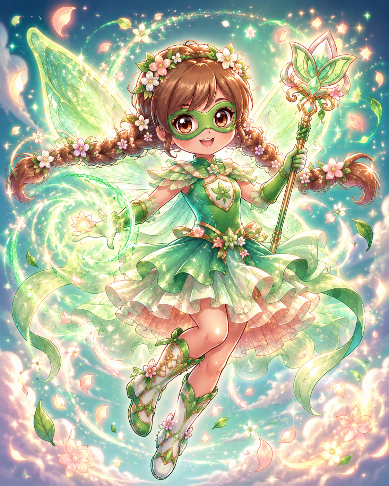
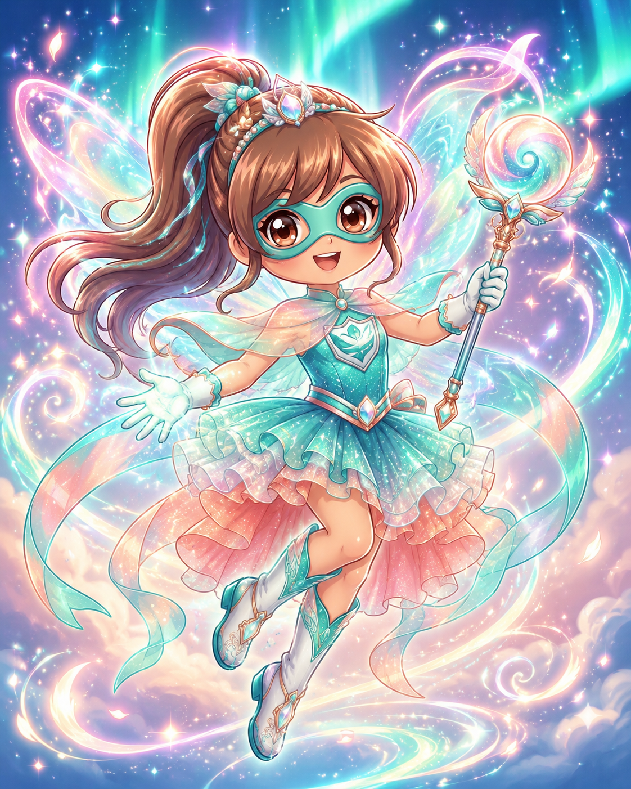
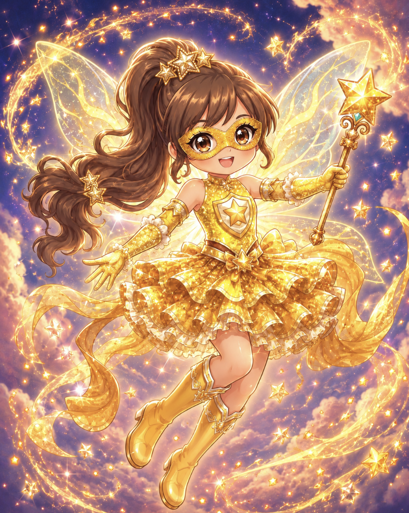
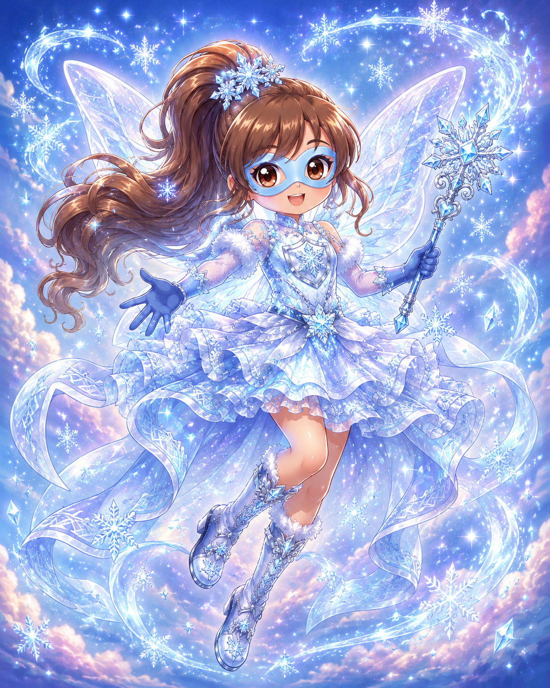
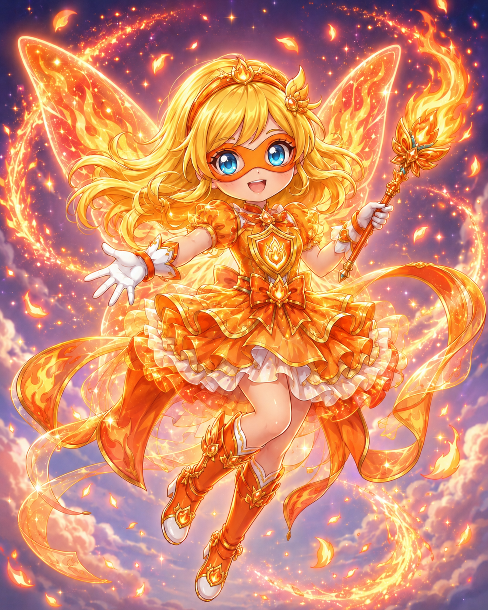
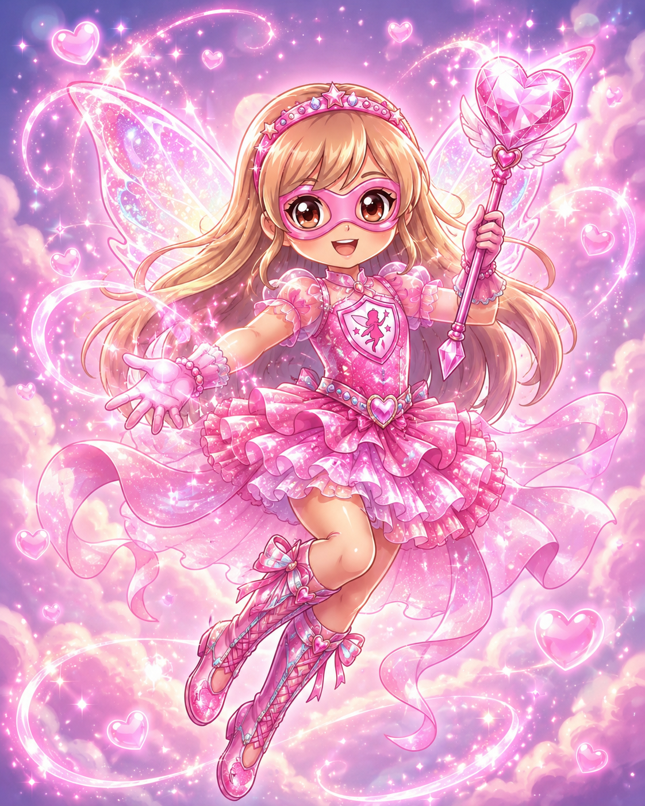
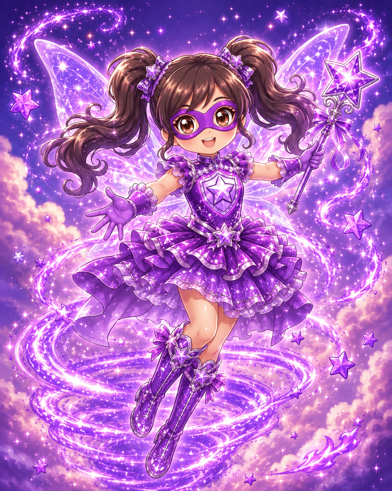
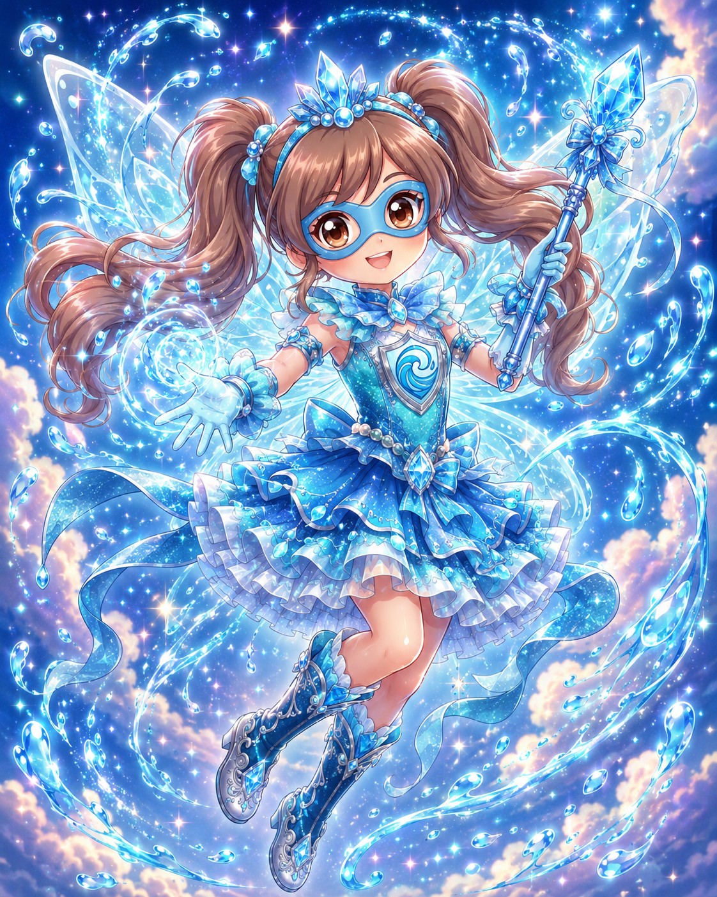
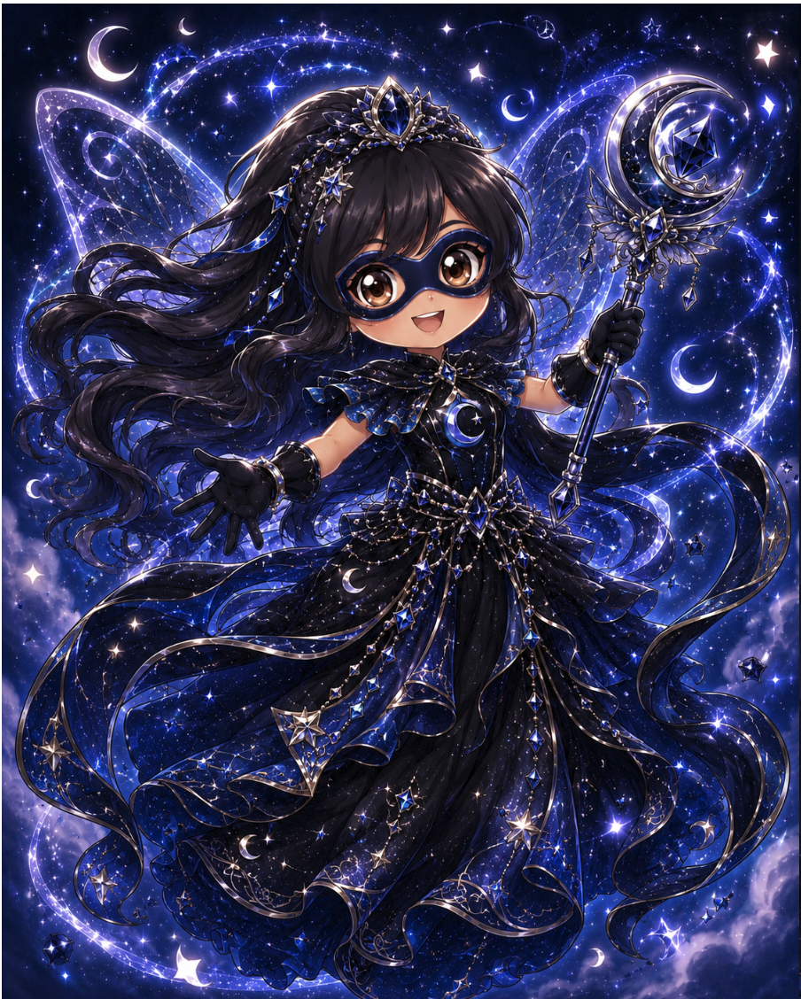
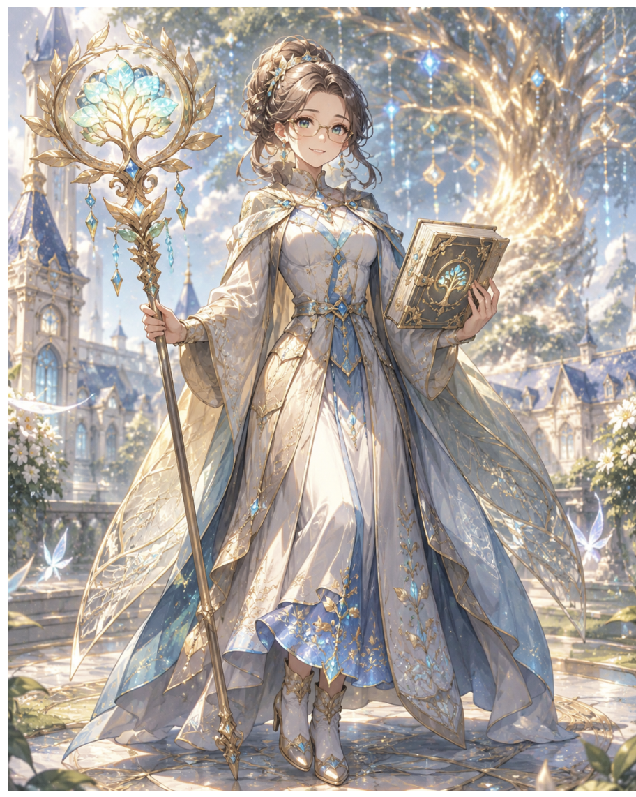
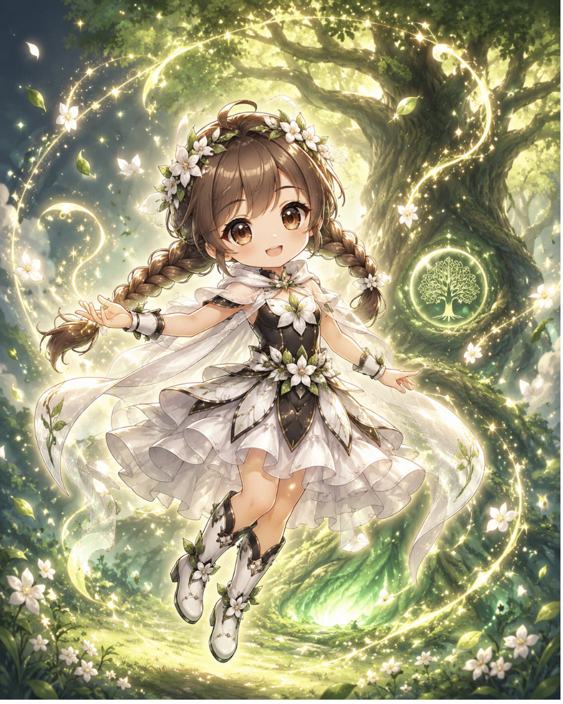
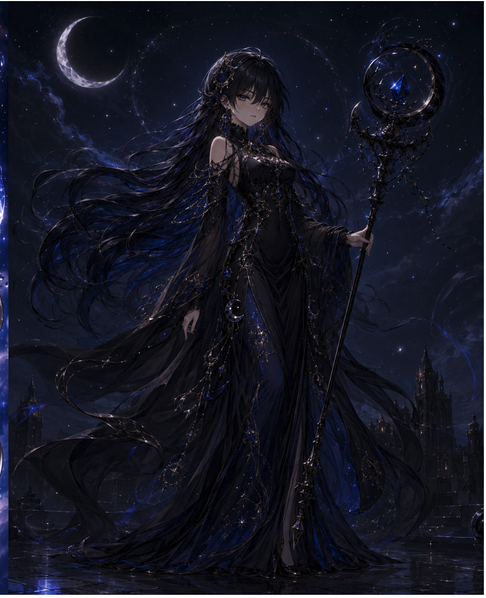
Para
toda la gente que alguna vez se sintió como Mati.
Escrito por
Milagros Sosa Racca
Árbol de la Memoria: Árbol antiguo del Bosque Mágico que da poderes. Puede ver el futuro y elige a sus heroínas con cuidado.
Dimensión Oscura: Espacio sin luz creado por Mati. Absorbe los poderes de aurora. Colapsó cuando Mati escapó.
Fairy Hero Academy: Academia que parece normal pero es mágica. La Directora Alma la dirige en secreto con ayuda del Árbol.
Piedra de la Discordia: Cristal oscuro que Mati usó para tentar a las heroínas y sembrar desconfianza.
Cristales oscuros: Armas que Mati construyó durante dos años. Pueden interrumpir los poderes del Árbol si están bien apuntados.
Aurora: Tipo de poder único que el Árbol creó específicamente para contrarrestar la oscuridad pura. No aparece en ningún libro ni registro histórico.
| Categoría | Ganadora | Por qué |
|---|---|---|
| 😂 La más graciosa | Juana | Siempre tiene una broma lista para cualquier momento. |
| 🎨 La más creativa | Lara | Dibujó a todas en la tierra con un palito durante la tregua. |
| 🧠 La más inteligente | Cata (Superstar) | Siempre tiene razón. Siempre. Y lo sabe. |
| 🌀 La más misteriosa | Cata (Super Psy) | Fue la primera en sentir el cristal oscuro. Nadie le preguntó cómo. |
| 💖 La más dulce | Mimi | Le apretó la mano a Vicky sin decir nada, en el momento exacto. |
| 🏃 La más rápida | Calu | Trepó el árbol más alto del claro solo para ver el horizonte. |
| ❄️ La más tranquila | Sofi | Levantó paredes de hielo sin decir una palabra ni una queja. |
| 🌿 La más poderosa | Mimi | Sigue siendo la que más poderes acumuló. El bosque habla con ella. |
| 🌪️ La más caótica | Juana | Ella y su Charizard armaron un caos adorable en el jardín de la academia. |
| 🤗 La más compañera | Mimi | Fue la primera en votar sí para Mati cuando nadie sabía qué decir. |
| 🌟 La más valiente | Vicky | Estuvo sola en la oscuridad total sin rendirse. Y encendió su aurora de todas formas. |
| 🔥 La más intensa | Vicky | Cuando entra a un cuarto, la aurora llena todo. No hay forma de no notarla. |
| 🤫 La más terca | Mati | Pasó dos años sola construyendo un plan. Nadie la convenció de parar hasta el final. |
| 📚 La que más estudió | Mati | Memorizó todos los poderes de todas las heroínas de todos los equipos anteriores. |
| 🐾 La mejor dueña de Pokémon | Mati | El Absol ganó la carrera de Pokémon por lejos. Y Mati lo miró con satisfacción evidente aunque no lo dijera. |
Las nuevas del equipo, antes de que el Árbol las encontrara. 🌟
Vicky vivía en la sombra de su hermana. No porque Mimi la hiciera sentir así, sino porque Mimi era Mimi: amaba los animales, entendía el bosque, tenía algo especial que todo el mundo podía ver. Y Vicky la quería demasiado como para tenerle envidia, pero a veces, cuando estaban juntas en el bosque y Leafeon seguía a Mimi y no a ella, sentía algo que no sabía muy bien cómo llamar.
Silvion la encontró a ella primero. No a Mimi. A Vicky. Una tarde de tormenta, cuando todos se habían quedado adentro, Vicky salió sola al jardín porque le gustaba la lluvia. Y ahí estaba: un Pokémon que brillaba con todos los colores incluso bajo el agua, mirándola como si la conociera de toda la vida. No habló. No hizo nada especial. Solo se acercó y se quedó a su lado.
Esa noche Vicky entendió algo importante: no era la hermana de Mimi. Era algo completamente suyo. Solo que todavía no sabía qué. 🌈
Mati aprendió a leer sola. No porque nadie le quisiera enseñar, sino porque nadie tenía tiempo. Vivía con su abuela en una casa al borde de un bosque oscuro, y su abuela era buena pero cansada, y Mati era chica pero autosuficiente, y eso a veces se parece a estar sola aunque no lo sea.
El Absol la encontró cuando tenía siete años. Apareció en el jardín una mañana como si siempre hubiera estado ahí. La abuela quiso espantarlo. Mati puso el cuerpo en el medio. El Absol se quedó.
Fue el Absol el que la llevó al Árbol de la Memoria por primera vez. Caminaron horas por el bosque oscuro siguiendo algo que Mati no podía ver pero que el Absol sí. Y cuando llegaron al claro y la luz dorada pulsó, Mati sintió algo que no había sentido nunca: que era exactamente el lugar donde tenía que estar.
Que había algo en el mundo hecho para ella.
Volvió todos los días durante un año. Estudió todo lo que pudo. Se preparó con todo lo que tenía. Y la noche que la luz dorada la envolvió por primera vez, supo que tenía razón.
Y cuando se apagó, supo que todavía no había llegado el momento. Solo que eso le llevó mucho tiempo entenderlo. 🌑
Escrito por
Milagros Sosa Racca
🌿 Personajes creados por Milagros Sosa Racca
⭐ Inspirado en las amigas del cole
🏫 Ambientado en la Fairy Hero Academy
🌳 Con el permiso del Árbol de la Memoria
💖 Dedicado a toda la gente que alguna vez se sintió como Mati
¡Gracias por leer la historia del Equipo Leaf! 🌿✨